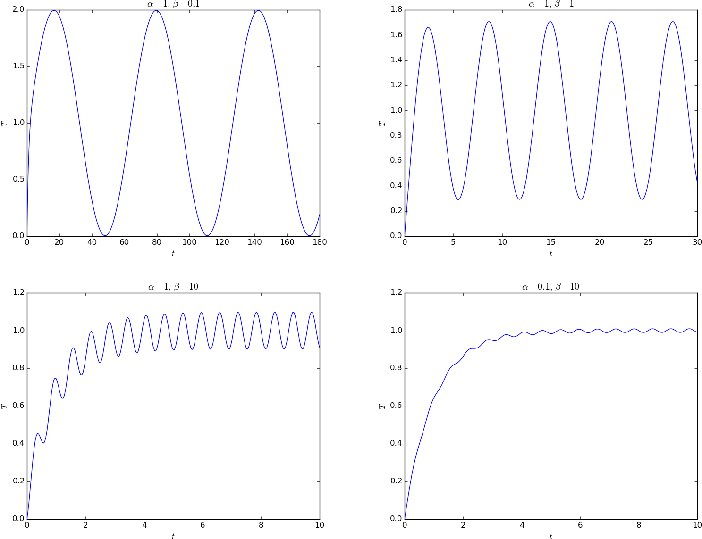
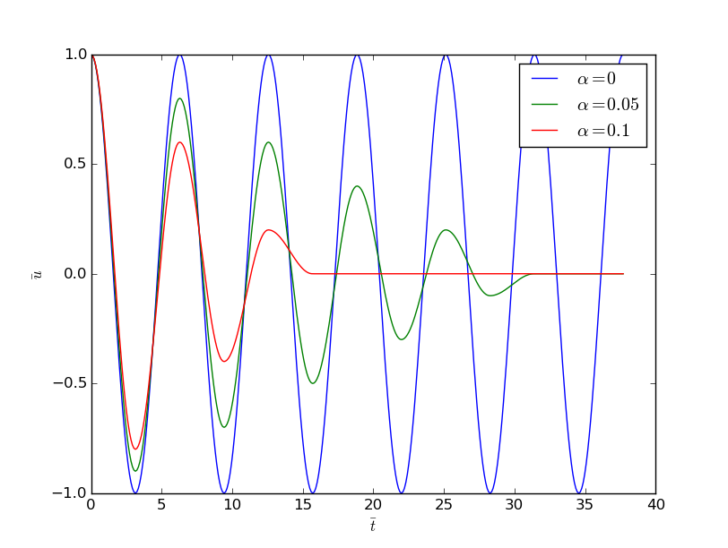
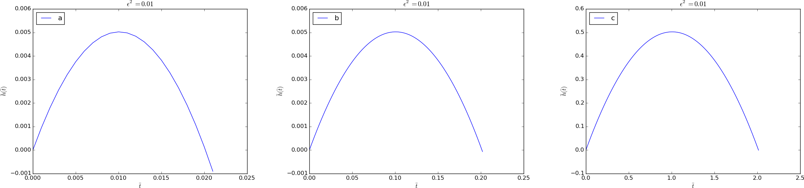
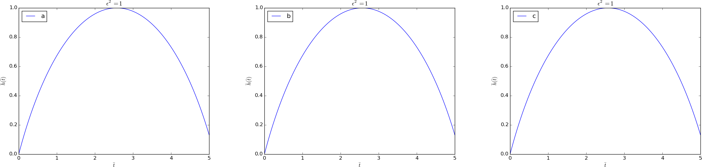

Vibration problems
We shall in this section address a range of different second-order ODEs for mechanical vibrations and demonstrate how to reason about the scaling in different physical scenarios.
Undamped vibrations without forcing
The simplest differential equation model for mechanical vibrations reads $$ \begin{equation} mu'' + ku = 0,\quad u(0)=I,\ u'(0)=V, \tag{2.64} \end{equation} $$ where unknown \( u(t) \) measures the displacement of the body, This is a common model for a vibrating body with mass \( m \) attached to a linear spring with spring constant \( k \) (and force \( -ku \)). Figure 7 shows a typical mechanical sketch of such a system: some mass can move horizontally without friction and is connected to a spring that exerts a force \( -ku \) on the body.
Figure 7: Oscillating body attached to a spring.

The first technical steps of scaling
The problem (2.64) has one independent variable \( t \) and one dependent variable \( u \). We introduce dimensionless versions of these variables: $$ \bar u =\frac{u}{u_c},\quad\bar t = \frac{t}{t_c},$$ where \( u_c \) and \( t_c \) are characteristic values of \( u \) and \( t \). Inserted in (2.64), we get $$ m\frac{u_c}{t_c^2}\frac{d^2\bar u}{d\bar t^2} + ku_c\bar u = 0, \quad u_c\bar u(0)=I,\quad \frac{u_c}{t_c}\frac{d\bar u}{d\bar t}(0)=V,$$ resulting in $$ \begin{equation} \frac{d^2\bar u}{d\bar t^2} + \frac{t_c^2 k}{m}\bar u = 0, \quad \bar u(0)=\frac{I}{u_c},\ \bar u'(0)=\frac{Vt_c}{u_c}\tp \tag{2.65} \end{equation} $$
What is an appropriate displacement scale \( u_c \)? The initial condition \( u(0)=I \) is a candidate, i.e., \( u_c=I \). But how to choose the time scale? Making the coefficient in front of the \( \bar u \) unity, such that both terms balance and are of size unity, is a candidate.
The exact solution
To better see what the proper scales of \( u \) and \( t \) are, we can look into the analytical solution of this problem. Although the exact solution of (2.64) is quite straightforward to calculate by hand, we take the opportunity to make use of SymPy to find \( u(t) \). The use of SymPy can later be generalized to vibration ODEs that are harder to solve by hand.
SymPy requires all mathematical symbols to be explicitly created:
from sympy import *
u = symbols('u', cls=Function)
w = symbols('w', real=True, positive=True)
I, V, C1, C2 = symbols('I V C1 C2', real=True)
To specify the ODE to be solved, we can make a Python function returning all the terms in the ODE:
# Define differential equation: u'' + w**2*u = 0
def ode(u):
return diff(u, t, t) + w**2*u
diffeq = ode(u(t))
The diffeq variable, defining the ODE, can be passed to the SymPy
function dsolve to find the symbolic solution of the ODE:
s = dsolve(diffeq, u(t))
# s is an u(t) == expression (Eq obj.), s.rhs grabs the expression
u_sol = s.rhs
print u_sol
The solution that gets printed is C1*sin(t*w) + C2*cos(t*w), indicating
that there are two integration constants C1 and C2 to be determined
by the initial conditions. The result of applying these conditions is
a \( 2\times 2 \) linear system of algebraic equations that SymPy can solve
by the solve function. The code goes as follows:
# The solution u_sol contains integration constants C1 and C2
# but these are not symbols, substitute them by symbols
u_sol = u_sol.subs('C1', C1).subs('C2', C2)
# Determine C1 and C2 from the initial conditions
ic = [u_sol.subs(t, 0) - I, u_sol.diff(t).subs(t, 0) - V]
print ic # 2x2 algebraic system for C1 and C2
s = solve(ic, [C1, C2])
# s is now a dictionary: {C2: I, C1: V/w}
# substitute solution back in u_sol
u_sol = u_sol.subs(C1, s[C1]).subs(C2, s[C2])
print u_sol
The u_sol variable is now I*cos(t*w) + V*sin(t*w)/w.
Since symbolic software is far from bug-free and can give wrong results,
we should always check the answer. Here, we insert the solution in the ODE
to see if the result is zero, and we insert the solution in the initial
conditions to see that these are fulfilled:
# Check that the solution fulfills the ODE and init.cond.
print simplify(ode(u_sol)),
print u_sol.subs(t, 0) - I, diff(u_sol, t).subs(t, 0) - V
There will be many more examples on using SymPy to find exact solutions of differential equation problems.
The solution of the ODE in mathematical notation is $$ u(t) = I\cos(\omega t) + \frac{V}{\omega}\sin(\omega t),\quad \omega = \sqrt{\frac{k}{m}}\tp$$ More insight arises from rewriting such an expression in the form \( A\cos(wt - \phi) \): $$ u(t) = \sqrt{I^2 + \frac{V^2}{\omega^2}}\cos(wt - \phi),\quad \phi = \tan^{-1}(V/(\omega I))\tp $$ Now we see that the \( u \) corresponds to cosine oscillations with a frequency shift \( \phi \) and amplitude \( \sqrt{I^2 + (V/\omega)^2} \).
The forthcoming text relies on a good understanding of concepts like period, frequency, and amplitude of oscillating signals, so readers who need to refresh these concepts are recommended to do Problem 2.12: Find the period of sinusoidal signals before continuing.
Discussion of the displacement scale
The amplitude of \( u \) is \( \sqrt{I^2 + V^2/\omega^2} \), and this expression is obviously a candidate for \( u_c \). However, the simpler choice \( u_c=\max (I, V/\omega) \) is also relevant and more attractive than the square root expression (but potentially a factor 1.4 wrong compared to the exact amplitude). It is not very important to have \( |u|\leq 1 \), the point is to avoid \( |u| \) very small or large.
Discussion of the time scale
What is an appropriate time scale? Looking at (2.65) and arguing that \( \bar u'' \) and \( \bar u \) both should be around unity in size, the coefficient \( t_c^2k/m \) must equal unity, implying that \( t_c=\sqrt{m/k} \). Also from the analytical solution we see that the solution goes like the sine or cosine of \( \omega t \), so \( 1/\omega = \sqrt{m/k} \) can be a characteristic time scale. Likewise, one period of the oscillations, \( P=2\pi/\omega \), can be the characteristic time, leading to \( t_c=2\pi/\omega \).
The dimensionless solution
With \( u_c=I \) and \( t_c=\sqrt{m/k} \) we get the scaled model $$ \begin{equation} \frac{d^2\bar u}{d\bar t^2} + \bar u = 0, \quad \bar u(0)=1,\ \bar u'(0)=\alpha, \tag{2.66} \end{equation} $$ where \( \alpha \) is a dimensionless parameter: $$ \alpha = \frac{V}{I}\sqrt{\frac{m}{k}}\tp$$ Note that in case \( V=0 \), we have "scaled away" all physical parameters. The universal solution without physical parameters is then \( \bar u(\bar t)=\cos\bar t \).
The unscaled solution is recovered as $$ \begin{equation} u(t) = I\bar u(\sqrt{k/m}\bar t)\tp \tag{2.67} \end{equation} $$ This expressions shows that the scaling is simply a matter of stretching or shrinking the axes.
Alternative displacement scale
Using \( u_c = V/\omega \), the equation is not changed, but the initial conditions become $$ \bar u(0) = \frac{I}{u_c} = \frac{I\omega}{V} =\frac{I}{V}\sqrt{\frac{k}{m}} = \alpha^{-1},\quad \bar u'(0)=1\tp$$
With \( u_c=V/\omega \) and one period as time scale, \( t_c=2\pi\sqrt{m/k} \), we get the alternative model $$ \begin{equation} \frac{d^2\bar u}{d\bar t^2} + 4\pi^2 \bar u = 0, \quad \bar u(0)=\alpha^{-1},\ \bar u'(0)=2\pi\tp \tag{2.68} \end{equation} $$ The unscaled solution is in this case recovered by $$ \begin{equation} u(t) = V\sqrt{\frac{m}{k}}\bar u(2\pi\sqrt{k/m}\bar t)\tp \tag{2.69} \end{equation} $$
About frequency and dimensions
The solution goes like \( \cos\omega t \), where \( \omega =\sqrt{m/k} \) must have dimension 1/s. Actually, \( \omega \) has dimension radians per second: rad/s. A radian is dimensionless since it is arc (length) divided by radius (length), but still regarded as a unit. The period \( P \) of vibrations is a more intuitive quantity than the frequency \( \omega \). The relation between \( P \) and \( \omega \) is \( P=2\pi/\omega \). The number of oscillation cycles per period, \( f \), is a more intuitive measurement of frequency and also known as frequency. Therefore, to be precise, \( \omega \) should be named angular frequency. The relation between \( f \) and \( T \) is \( f=1/T \), so \( f=2\pi\omega \) and measured in Hz (1/s), which is the unit for counts per unit time.
Undamped vibrations with constant forcing
For vertical vibrations in the gravity field, the model (2.64) must also take the gravity force \( -mg \) into account: $$ mu'' + ku = -mg\tp$$ How does the new term \( -mg \) influence the scaling? We observe that if there is no movement of the body, \( u''=0 \), and the spring elongation matches the gravity force: \( ku = -mg \), leading to a steady displacement \( u=-mg/k \). We can then have oscillations around this equilibrium point. A natural scaling for \( u \) is therefore $$ \bar u = \frac{u - (-mg/k)}{u_c}=\frac{uk + mg}{ku_c}\tp$$ The scaled differential equation with the same time scale as before reads $$ \frac{d^2\bar u}{d\bar t^2} + \bar u - \frac{t_c^2}{u_c}g = -\frac{t_c^2}{u_c}g,$$ leading to $$ \frac{d^2\bar u}{d\bar t^2} + \bar u = 0\tp$$ The initial conditions \( u(0)=I \) and \( u'(0)=V \) become, with \( u_c=I \), $$ \bar u(0) = 1 + \frac{mg}{kI},\quad \frac{d\bar u}{d\bar t}(0)=\sqrt{\frac{m}{k}}\frac{V}{I}\tp$$ We see that the oscillations around the equilibrium point in the gravity field are identical to the horizontal oscillations without gravity, except for an offset \( mg/(kI) \) in the displacement.
Undamped vibrations with time-dependent forcing
Now we add a transient forcing term \( F(t) \) to the model (2.64): $$ \begin{equation} mu'' + ku = F(t),\quad u(0)=I,\ u'(0)=V\tp \tag{2.70} \end{equation} $$ Take the forcing to be oscillating: $$ F(t) = A\cos(\psi t)\tp$$ The technical steps of the scaling are still the same, with the intermediate result $$ \begin{equation} \frac{d^2\bar u}{d\bar t^2} + \frac{t_c^2 k}{m}\bar u = \frac{t_c^2}{mu_c}A\cos(\psi t_c\bar t), \quad \bar u(0)=\frac{I}{u_c},\ \bar u'(0)=\frac{Vt_c}{u_c}\tp \tag{2.71} \end{equation} $$ What are typical displacement and time scales? This is not so obvious without knowing the details of the solution, because there are three parameters (\( I \), \( V \), and \( A \)) that influence the magnitude of \( u \). Moreover, there are two time scales, one for the free vibrations of the systems and one for the forced vibrations \( F(t) \).
Investigating scales via analytical solutions
As we have seen already several times, having access to
an exact solution is very fortunate as it allows us to directly
examine the scales. Also in the present problem it is possible
to derive an exact solution. We
continue the SymPy session from the previous section and perform much
of the same steps. Note that we use w for \( \omega = \sqrt{k/m} \)
in the computer code (to obtain a more direct visual counterpart to
\( \omega \)).
SymPy may get confused when coefficients in differential equations
contain several symbols. We therefore rewrite the equation with
at most one symbol in each coefficient (i.e., symbolic software is
in general
more successful when applied to scaled differential equations than the
unscaled counterparts, but right now our task is to solve the unscaled version).
The amplitude \( A/m \) in the forcing term is of this reason
replaced by the symbol A1.
A, A1, m, psi = symbols('A A1 m psi', positive=True, real=True)
def ode(u):
return diff(u, t, t) + w**2*u - A1*cos(psi*t)
diffeq = ode(u(t))
u_sol = dsolve(diffeq, u(t))
u_sol = u_sol.rhs
# Determine the constants C1 and C2 in u_sol
# (first substitute our own declared C1 and C2 symbols,
# then use the initial conditions)
u_sol = u_sol.subs('C1', C1).subs('C2', C2)
eqs = [u_sol.subs(t, 0) - I, u_sol.diff(t).subs(t, 0) - V]
s = solve(eqs, [C1, C2])
u_sol = u_sol.subs(C1, s[C1]).subs(C2, s[C2])
# Check that the solution fulfills the equation and init.cond.
print simplify(ode(u_sol))
print simplify(u_sol.subs(t, 0) - I)
print simplify(diff(u_sol, t).subs(t, 0) - V)
u_sol = simplify(expand(u_sol.subs(A1, A/m)))
print u_sol
The output from the last line is
A/m*cos(psi*t)/(-psi**2 + w**2) + V*sin(t*w)/w +
(A/m + I*psi**2 - I*w**2)*cos(t*w)/(psi**2 - w**2)
With a bit of rewrite this expression becomes
$$ u(t) = \frac{A/m}{\omega^2 - \psi^2}\cos(\psi t) + \frac{V}{\omega} \sin(\omega t) + \left(\frac{A/m}{\psi^2 - \omega^2} + I\right) \cos (\omega t)\tp $$ Obviously, this expression is only meaningful for \( \psi\neq\omega \). The case \( \psi = \omega \) gives an infinite amplitude in this model, a phenomenon known as resonance. The amplitude becomes finite when damping is included, see the section Damped vibrations with forcing.
When the system starts from rest, \( I=V=0 \), and the forcing is the only driving mechanism, we can simplify: $$ \begin{align*} u(t) &= \frac{A}{m(\omega^2 - \psi^2)}\cos(\psi t) + \frac{A}{m(\psi^2 - \omega^2)}\cos (\omega t)\\ &= \frac{A}{m(\omega^2 - \psi^2)}(\cos(\psi t) - \cos(\omega t))\tp \end{align*} $$ To gain more insight, \( \cos(\psi t) - \cos(\omega t) \) can be rewritten in terms of the mean frequency \( (\psi + \omega)/2 \) and the difference in frequency \( (\psi - \omega)/2 \): $$ \begin{equation} u(t) = \frac{A}{m(\omega^2 - \psi^2)} 2 \sin\left(\frac{\psi - \omega}{2}t\right) \sin\left(\frac{\psi + \omega}{2}t\right), \tag{2.72} \end{equation} $$ showing that there is a signal with frequency \( (\psi + \omega)/2 \) whose amplitude has a (much) slower frequency \( (\psi - \omega)/2 \). Figure 8 shows an example on such a signal.
Figure 8: Signal with frequency 3.1 and envelope frequency 0.2.

The displacement and time scales
A characteristic displacement can in the latter special case be taken as \( u_c= A/(m(\omega^2 - \psi^2)) \). This is also a relevant choice in the more general case \( I\neq0, V\neq 0 \), unless \( I \) or \( V \) is so large that it dominates over the amplitude caused by the forcing. With \( u_c= A/(m(\omega^2 - \psi^2)) \) we also have three special cases: \( \omega \ll \psi \), \( \omega \gg\psi \), and \( \psi \sim \omega \). In the latter case we need \( u_c= A/(m(\omega^2 - \psi^2)) \) if we want \( |u|\leq 1 \). When \( \omega \) and \( \psi \) are significantly different, we may choose one of them and neglect the smaller. Choosing \( \omega \) means \( u_c=A/k \), which is the relevant scale if \( \omega\gg\psi \). In the opposite case, \( \omega\ll\psi \), \( u_c=A/(m\psi^2) \).
The time scale is dominated by the fastest oscillations, which are of frequency \( \psi \) or \( \omega \) when these are close and the largest of them when they are distant. In any case, we set \( t_c=1/\max(\psi,\omega) \).
Finding the displacement scale from the differential equation
Going back to (2.71), we may demand that all the three terms in the differential equation are of size unity. This leads to \( t_c=\sqrt{m/k} \) and \( u_c=At_c^2/m = A/k \). The formula for \( u_c \) is a kind of measure of the ratio of the forcing and the spring force (the dimensionless number \( A/(ku_c) \) would be this ratio).
Looking at (2.72), we see that if \( \psi\ll\omega \), the amplitude can be approximated by \( A/(m\omega^2)=A/k \), showing that the scale \( u_c=A/k \) is relevant for an excitation frequency \( \psi \) that is small compared to the free vibration frequency \( \omega \).
Scaling with free vibrations as time scale
The next step is to work out the dimensionless ODE for the chosen scales. We first select the time scale based on the free oscillations with frequency \( \omega \), i.e., \( t_c=1/\omega \). Inserting the expression in (2.71) results in $$ \begin{equation} \frac{d^2\bar u}{d\bar t^2} + \bar u = \gamma \cos(\delta\bar t), \quad \bar u(0)=\alpha,\ \bar u'(0)=\beta\tp \tag{2.73} \end{equation} $$ Here we have four dimensionless variables $$ \begin{align} \alpha &= \frac{I}{u_c}, \tag{2.74}\\ \beta &= \frac{Vt_c}{u_c} = \frac{V}{\omega u_c}, \tag{2.75}\\ \gamma &= \frac{t_c^2 A}{mu_c} = \frac{A}{ku_c}, \tag{2.76}\\ \delta &= \frac{t_c}{\psi^{-1}} = \frac{\psi}{\omega}\tp \tag{2.77} \end{align} $$ We remark that the choice of \( u_c \) has so far not been made. Several different cases will be considered below, and we will see that certain choices reduce the number of independent dimensionless variables to three.
The four dimensionless variables above have interpretations as ratios of physical effects:
- \( \alpha \): ratio of the initial displacement and the characteristic response \( u_c \),
- \( \beta \): ratio of the initial velocity and the typical velocity measure \( u_c/t_c \),
- \( \gamma \): ratio of the forcing \( A \) and the mass times acceleration \( mu_c/t_c^2 \) or the ratio of the forcing and the spring force \( ku_c \)
- \( \delta \): ratio of the frequencies or the time scales of the forcing and the free vibrations.
Software
Any solver for (2.71) can be used for (2.73). More details are provided at the end of the section Damped vibrations with forcing.
Choice of \( u_c \) close to resonance
Now we shall discuss various choices of \( u_c \). Close to resonance, when \( \psi\sim\omega \), we may set \( u_c=A/(m(\omega^2 - \psi^2)) \). The dimensionless numbers become in this case $$ \begin{align*} \alpha &= \frac{I}{u_c} = \frac{I}{A/k}(1-\delta^2),\\ \beta &= \frac{V}{\omega u_c} = \frac{V\sqrt{km}}{A}(1-\delta^2),\\ \gamma &= \frac{A}{ku_c} = 1-\delta^2,\\ \delta &= \frac{\psi}{\omega}\tp \end{align*} $$ With \( \psi = 0.99\omega \), \( \delta =0.99 \), \( V=0 \), \( \alpha = \gamma = 1-\delta^2 = 0.02 \), we have the problem $$ \frac{d^2\bar u}{d\bar t^2} + \bar u = 0.02 \cos(0.99\bar t), \quad \bar u(0)=0.02,\ \bar u'(0)=0\tp $$ This is a problem with a very small initial condition and a very small forcing, but the state close to resonance brings the amplitude up to about unity, see the result of numerical simulations with \( \delta=0.99 \) in Figure 9. Neglecting \( \alpha \), the solution is given by (2.72), which here means \( A=1-\delta^2 \), \( m=1 \), \( \omega=1 \), \( \psi=\delta \): $$ \bar u(\bar t) = 2\sin(-0.005\bar t)\sin(0.995\bar t)\tp $$ Note that this is a problem which demands very high accuracy in the numerical calculations. Using 20 time steps per period gives a significant angular frequency error and an amplitude of about 1.4. We used 160 steps per period for the results in Figure 9.
Figure 9: Forced undamped vibrations close to resonance.

Unit size of all terms in the ODE
Using the displacement scale \( u_c=A/k \) leads to (2.73) with $$ \begin{align*} \alpha &= \frac{I}{u_c} = \frac{I}{A/k},\\ \beta &= \frac{V}{\omega u_c} = \frac{V k}{A\omega},\\ \gamma &= \frac{A}{ku_c} = 1,\\ \delta &= \frac{\psi}{\omega}\tp \end{align*} $$ Simulating a case with \( \delta=0.5 \), \( \alpha=1 \), and \( \beta=0 \) gives the oscillations in Figure 10, which is a case away from resonance, and the amplitude is about unity. However, choosing \( \delta =0.99 \) (close to resonance) results in a figure similar to Figure 9, except that the amplitude is about \( 10^2 \) because of the moderate size of \( u_c \). The present scaling is therefore most suitable away from resonance, and when the terms containing \( \cos\omega t \) and \( \sin\omega t \) are important (e.g., \( \omega\gg\psi \)).
Figure 10: Forced undamped vibrations away from resonance.

Choice of \( u_c \) when \( \psi\gg\omega \)
Finally, we may look at the case where \( \psi\gg\omega \) such that \( u_c=A/(m\psi^2) \) is a relevant scale (i.e., omitting \( \omega^2 \) compared to \( \psi^2 \) in the denominator), but in this case we should use \( t_c=1/\psi \) since the force varies much faster than the free vibrations of the system. This choice of \( t_c \) changes the scaled ODE to $$ \begin{equation} \frac{d^2\bar u}{d\bar t^2} + \delta^{-2}\bar u = \gamma \cos(\bar t), \quad \bar u(0)=\alpha,\ \bar u'(0)=\beta, \tag{2.78} \end{equation} $$ where $$ \begin{align*} \alpha &= \frac{I}{u_c} = \frac{I}{A/k}\delta^2,\\ \beta &= \frac{Vt_c}{u_c} = \frac{V\sqrt{km}}{A}\delta,\\ \gamma &= \frac{t_c^2 A}{mu_c} = 1,\\ \delta &= \frac{t_c}{\psi^{-1}} = \frac{\psi}{\omega}\tp \end{align*} $$ In the regime \( \psi\gg\omega \), \( \delta\gg 1 \), thus making \( \alpha \) and \( \beta \) large. However, if \( \alpha \) and/or \( \beta \) is large, the initial condition dominates over the forcing, and will also dominate the amplitude of \( u \), thereby making the scaling of \( u \) inappropriate. In case \( I=V=0 \) so that \( \alpha=\beta=0 \), (2.72) predicts (\( A=m=1 \), \( \omega=\delta^{-1} \), \( \psi=1 \)) $$ \bar u(\bar t) = (\delta^{-2}-1)^{-1}2 \sin\left(\frac{1}{2}(1 -\delta^{-1})\bar t\right) \sin\left(\frac{1}{2}(1 +\delta^{-1})\bar t\right), $$ which has an amplitude about \( 2 \) for \( \delta\gg 1 \). Figure 11 shows a case.
Figure 11: Forced undamped vibrations with rapid forcing.

With \( \alpha=0.05\delta^2=5 \), we get a significant contribution from the free vibrations (the homogeneous solution of the ODE) as shown in Figure 12. For larger \( \alpha \) values, one must base \( u_c \) on \( I \) instead. (The graphs in Figure 11 and 12 were produced by numerical simulations with 160 time steps per period of the forcing.)
Figure 12: Forced undamped vibrations with rapid forcing and initial displacement of 5.

Displacement scale based on \( I \)
Choosing \( u_c=I \) gives $$ \begin{equation} \frac{d^2\bar u}{d\bar t^2} + \bar u = \gamma\cos(\delta\bar t), \quad \bar u(0)=1,\ \bar u'(0)=\beta, \tag{2.79} \end{equation} $$ with $$ \begin{align} \beta &= \frac{Vt_c}{u_c} = \frac{V}{I}\sqrt{\frac{m}{k}}, \tag{2.80}\\ \gamma & = \frac{tc^2A}{mu_c} = \frac{A}{ku_c} = \frac{A}{kI} \tp \tag{2.81} \end{align} $$ This scaling is not relevant close to resonance since then \( u_c\gg I \).
Damped vibrations with forcing
We now introduce a linear damping force \( bu'(t) \) in the equation of motion: $$ \begin{equation} mu'' + bu' + ku = A\cos(\psi t),\quad u(0)=I,\ u'(0)=V\tp \tag{2.82} \end{equation} $$ Figure 13 shows a typical one-degree-of-freedom mechanical system with a linear dashpot, representing the damper (\( bu' \)), a linear spring (\( ku \)), and an external force (\( F \)).
Figure 13: Oscillating body with external force, attached to a spring and damper.

The standard scaling procedure results in $$ \begin{equation} \frac{d^2\bar u}{d\bar t^2} + \frac{t_c b}{m}\frac{d\bar u}{d\bar t} + \frac{t_c^2 k}{m}\bar u = \frac{t_c^2}{mu_c}A\cos(\psi t_c\bar t), \quad \bar u(0)=\frac{I}{u_c},\ \bar u'(0)=\frac{Vt_c}{u_c}\tp \tag{2.83} \end{equation} $$
The exact solution
As always, it is a great advantage to look into exact solutions for controlling our choice of scales. Using SymPy to solve (2.82) is, in principle, very straightforward:
>>> diffeq = diff(u(t), t, t) + b/m*diff(u(t), t) + w**2*u(t)
>>> s = dsolve(diffeq, u(t))
>>> s.rhs
C1*exp(t*(-b - sqrt(b - 2*m*w)*sqrt(b + 2*m*w))/(2*m)) +
C2*exp(t*(-b + sqrt(b - 2*m*w)*sqrt(b + 2*m*w))/(2*m))
This is indeed the correct solution, but it is on a complex
exponential function form, valid for all \( b \), \( m \), and \( \omega \). We are
interested in the case with small damping, \( b < 2m\omega \), where the solution
is an exponentially damped sinusoidal function. Rewriting the expression
in the right form is tricky with SymPy commands. Instead, we demonstrate
a common technique when doing symbolic computing: general procedures like
dsolve are replaced by manual steps. That is, we solve the ODE "by hand",
but use SymPy to assist the calculations.
The solution is composed of a homogeneous
solution \( u_h \) of \( mu'' + bu' + ku=0 \) and one particular solution \( u_p \)
of the nonhomogeneous equation
\( mu'' + bu' + ku=A\cos(\psi t) \). The homogeneous solution with
damped oscillations (requiring \( b < 2\sqrt{mk} \)) can be
found by the following code. We have divided the differential equation
by \( m \) and introduced \( B=\frac{1}{2}b/m \) and let A1 represent
\( A/m \) to simplify expressions and
help SymPy with less symbols in the equation. Without these simplifications,
SymPy stalls in the computations due to too many symbols in the equation.
The problem is actually a solid argument for scaling differential equations
before asking SymPy to solve them since scaling effectively reduces the
number of parameters in the equations!
The following SymPy steps derives the solution of the homogeneous ODE:
u = symbols('u', cls=Function)
t, w, B, A, A1, m, psi = symbols('t w B A A1 m psi',
positive=True, real=True)
def ode(u, homogeneous=True):
h = diff(u, t, t) + 2*B*diff(u, t) + w**2*u
f = A1*cos(psi*t)
return h if homogeneous else h - f
# Find coefficients in polynomial (in r) for exp(r*t) ansatz
r = symbols('r')
ansatz = exp(r*t)
poly = simplify(ode(ansatz)/ansatz)
# Convert to polynomial to extract coefficients
poly = Poly(poly, r)
# Extract coefficients in poly: a_*t**2 + b_*t + c_
a_, b_, c_ = poly.coeffs()
# Assume b_**2 - 4*a_*c_ < 0
d = -b_/(2*a_)
if a_ == 1:
omega = sqrt(c_ - (b_/2)**2) # nicer formula
else:
omega = sqrt(4*a_*c_ - b_**2)/(2*a_)
# The homogeneous solution is a linear combination of a
# cos term (u1) and a sin term (u2)
u1 = exp(d*t)*cos(omega*t)
u2 = exp(d*t)*sin(omega*t)
C1, C2, V, I = symbols('C1 C2 V I', real=True)
u_h = simplify(C1*u1 + C2*u2)
print 'u_h:', u_h
The print out shows $$ u_h = e^{-Bt}\left(C_1 \cos(\sqrt{\omega^2 - B^2}t) + C_2 \sin(\sqrt{\omega^2 - B^2}t)\right),$$ where \( C_1 \) and \( C_2 \) must be determined by the initial conditions later. It is wise to check that \( u_h \) is indeed a solution of the homogeneous differential equation:
assert simplify(ode(u_h)) == 0
We have previously just printed the residuals of the ODE and initial
conditions after inserting the solution, but it is better in a code to
let the programming language test that the residuals are symbolically zero.
This is achieved using the assert statement in Python. The argument is
a boolean expression, and if the expression evaluates to False,
an AssertionError is raised and the program aborts (otherwise assert
runs silently for a True boolean expression). Hereafter, we will use
assert for consistency checks in computer code.
The ansatz for the particular solution \( u_p \) is $$ u_p= C_3\cos(\psi t) + C_4\sin(\psi t),$$ which inserted in the ODE gives two equations for \( C_3 \) and \( C_4 \). The relevant SymPy statements are
# Particular solution
C3, C4 = symbols('C3 C4')
u_p = C3*cos(psi*t) + C4*sin(psi*t)
eqs = simplify(ode(u_p, homogeneous=False))
# Collect cos(omega*t) terms
print 'eqs:', eqs
eq_cos = simplify(eqs.subs(sin(psi*t), 0).subs(cos(psi*t), 1))
eq_sin = simplify(eqs.subs(cos(psi*t), 0).subs(sin(psi*t), 1))
s = solve([eq_cos, eq_sin], [C3, C4])
u_p = simplify(u_p.subs(C3, s[C3]).subs(C4, s[C4]))
# Check that the solution is correct
assert simplify(ode(u_p, homogeneous=False)) == 0
Using the initial conditions for the complete solution \( u=u_h+u_p \) determines \( C_1 \) and \( C_2 \):
u_sol = u_h + u_p # total solution
# Initial conditions
eqs = [u_sol.subs(t, 0) - I, u_sol.diff(t).subs(t, 0) - V]
# Determine C1 and C2 from the initial conditions
s = solve(eqs, [C1, C2])
u_sol = u_sol.subs(C1, s[C1]).subs(C2, s[C2])
Finally, we should check that u_sol is indeed the correct solution:
checks = dict(
ODE=simplify(expand(ode(u_sol, homogeneous=False))),
IC1=simplify(u_sol.subs(t, 0) - I),
IC2=simplify(diff(u_sol, t).subs(t, 0) - V))
for check in checks:
msg = '%s residual: %s' % (check, checks[check])
assert checks[check] == sympify(0), msg
Finally, we may take u_sol = u_sol.subs(A, A/m) to get the right
expression for the solution.
Using latex(u_sol) results in a huge expression, which should be
manually ordered to something like the following:
$$
\begin{align*} u = &
\frac{Am^{-1}}{4 B^{2} \psi^{2} +
\Omega^{2}} \left(2 B \psi
\sin{\left (\psi t \right )} - \Omega\cos{\left (\psi t \right )}\right) + \\
&
{e^{-B t}} \biggl(
C_1 \cos{\left( t \sqrt{\omega^{2}- B^{2}}\right)} +
C_2 \sin{\left (t \sqrt{\omega^{2}- B^{2}}\right )}\biggr)\\
C_1 &= \frac{Am^{-1} \Omega + 4 I B^{2} \psi^{2} +
I\Omega^2}{
4 B^{2} \psi^{2} + \Omega^2}\\
C_2 &=
\frac{- Am^{-1} B\Omega + 4 I B^{3} \psi^{2} +
I B\Omega^2 + 4 V B^{2}\psi^{2} +
V\Omega^2}{
\sqrt{\omega^{2} - B^{2}}
\left(4 B^{2} \psi^{2} + \Omega^2\right)},\\
\Omega &= \psi^2 - \omega^2\tp
\end{align*}
$$
The most important feature of this solution is that there are two time scales with frequencies \( \psi \) and \( \sqrt{\omega^2 - B^2} \), respectively, but the latter appears in terms that decay as \( e^{-Bt} \) in time. The attention is usually on longer periods of time, so in that case the solution simplifies to $$ \begin{align} u &= \frac{Am^{-1}}{4 B^{2} \psi^{2} + \Omega^{2}} \left(2 B \psi \sin{\left (\psi t \right )} - \Omega\cos{\left (\psi t \right )}\right) \nonumber\\ &= \frac{A}{m}\frac{1}{\sqrt{4B^2\psi^2 + \Omega^2}}\cos(\psi t + \phi) \frac{(\psi\omega)^{-1}}{(\psi\omega)^{-1}} \nonumber\\ & = \frac{A}{k} Q\delta^{-1}\left(1 + Q^2(\delta - \delta^{-1})\right)^{- \frac{1}{2}}\cos(\psi t + \phi), \tag{2.84} \end{align} $$ where we have introduced the dimensionless numbers $$ Q = \frac{\omega}{2B},\quad\delta = \frac{\psi}{\omega},$$ and $$ \phi = \tan^{-1}\left(-\frac{2B}{\omega^2 - \psi^2}\right) = \tan^{-1}\left(\frac{Q^{-1}}{\delta^2 - 1}\right)\tp$$ \( Q \) is commonly called quality factor and \( \phi \) is the phase shift. Dividing (2.84) by \( A/k \), which is a common scale for \( u \), gives the dimensionless relation $$ \begin{equation} \frac{u}{A/k} = \frac{Q}{\delta} R(Q,\delta)^{\frac{1}{2}}\cos(\psi t + \phi), \quad R(Q,\delta) = \left(1 + Q^2(\delta - \delta^{-1})\right)^{-1}\tp \tag{2.85} \end{equation} $$
Choosing scales
Much of the discussion about scales in the previous sections are relevant also when damping is included. Although the oscillations with frequency \( \sqrt{\omega^2-B^2} \) die out for \( t\gg B^{-1} \), we start with using this frequency for the time scale. A highly relevant assumption for engineering applications of (2.82) is that the damping is small. Therefore, \( \sqrt{\omega^2-B^2} \) is close to \( \omega \) and we simply apply \( t_c=1/\omega \) as before (if not the interest in large \( t \) for which the oscillations with frequency \( \omega \) has died out).
The coefficient in front of the \( \bar u' \) term then becomes $$ \frac{b}{m\omega} = \frac{2B}{\omega} = Q^{-1}\tp$$ The rest of the ODE is given in the previous section, and the particular formulas depend on the choices of \( t_c \) and \( u_c \).
Choice of \( u_c \) at resonance
The relevant scale for \( u_c \) at or nearby resonance (\( \psi = \omega \)) becomes different from the previous section, since with damping, the maximum amplitude is a finite value. For \( t\gg B^{-1} \), when the \( \sin\psi t \) term is dominating, we have for \( \psi = \omega \): $$ u = \frac{Am^{-1}2B\psi}{4B^2\psi^2}\sin (\psi t) = \frac{A}{2Bm\psi}\sin (\psi t) = \frac{A}{b\psi}\sin (\psi t) \tp $$ This motivates the choice $$ u_c = \frac{A}{b\psi} = \frac{A}{b\omega}\tp$$ (It is wise during computations like this to stop and check the dimensions: \( A \) must be \( [\hbox{MLT}^{-2}] \) from the original equation (\( F(t) \) must have the same dimension as \( mu'' \)), \( bu' \) must also have dimension \( [\hbox{MLT}^{-2}] \), implying that \( b \) has dimension \( [\hbox{MT}^{-1}] \). \( A/b \) then has dimension \( LT^{-1} \), and \( A/(b\psi) \) gets dimension \( [L] \), which matches what we want for \( u_c \).)
The differential equation on dimensionless form becomes $$ \begin{equation} \frac{d^2\bar u}{d\bar t^2} + Q^{-1}\frac{d\bar u}{d\bar t} + \bar u = \gamma \cos(\delta\bar t), \quad \bar u(0)=\alpha,\ \bar u'(0)=\beta, \tag{2.86} \end{equation} $$ with
$$ \begin{align} \alpha &= \frac{I}{u_c} = \frac{Ib}{A}\sqrt{\frac{k}{m}}, \tag{2.87}\\ \beta &= \frac{Vt_c}{u_c} = \frac{Vb}{A}, \tag{2.88}\\ \gamma &= \frac{t_c^2 A}{mu_c} = \frac{b\omega}{k}, \tag{2.89}\\ \delta &= \frac{t_c}{\psi^{-1}} = \frac{\psi}{\omega} = 1\tp \tag{2.90} \end{align} $$
Choice of \( u_c \) when \( \omega\gg\psi \)
In the limit \( \omega\gg\psi \) and \( t\gg B^{-1} \), $$ u \approx \frac{A}{m\omega^2}\cos\psi t = \frac{A}{k}\cos\psi t,$$ showing that \( u_c=A/k \) is an appropriate displacement scale. (Alternatively, we get this scale also from demanding \( \gamma=1 \) in the ODE.) The dimensionless numbers \( \alpha \), \( \beta \), and \( \delta \) are as for the forced vibrations without damping.
Choice of \( u_c \) when \( \omega\ll\psi \)
In the limit \( \omega\ll\psi \), we should base \( t_c \) on the rapid variations in the excitation: \( t_c=1/\psi \).
Software
It is easy to reuse a solver for a general vibration problem also
in the dimensionless case.
In particular, we may use the solver function in the
file vib.py:
def solver(I, V, m, b, s, F, dt, T, damping='linear'):
for solving the ODE problem
$$ mu'' + f(u') + s(u) = F(t),\quad u(0)=I,\ u'(0)=V,\ t\in (0,T],$$
with time steps dt. With damping='linear', we have \( f(u')=bu' \), while the
other value is 'quadratic', meaning \( f(u')=b|u'|u' \).
Given the dimensionless numbers \( \alpha \), \( \beta \), \( \gamma \), \( \delta \),
and \( Q \),
an appropriate call for solving (2.73) is
u, t = solver(I=alpha, V=beta, m=1, b=1.0/Q,
s=lambda u: u, F=lambda t: gamma*cos(delta*t),
dt=2*pi/n, T=2*pi*P)
where n is the number of intervals per period and P is the number
of periods to be simulated.
We way wrap this call in a solver_scaled function and wrap it furthermore
with joblib to avoid repeated calls,
as we explained in
the section Making software for utilizing the scaled model:
from vib import solver as solver_unscaled
def solver_scaled(alpha, beta, gamma, delta, Q, T, dt):
"""
Solve u'' + (1/Q)*u' + u = gamma*cos(delta*t),
u(0)=alpha, u'(1)=beta, for (0,T] with step dt.
"""
print 'Computing the numerical solution'
from math import cos
return solver_unscaled(I=alpha, V=beta, m=1, b=1./Q,
s=lambda u: u,
F=lambda t: gamma*cos(delta*t),
dt=dt, T=T, damping='linear')
import joblib
disk_memory = joblib.Memory(cachedir='temp')
solver_scaled = disk_memory.cache(solver_scaled)
This code is found in vib_scaled.py
and features an application for running the scaled problem with
options on the command-line for \( \alpha \), \( \beta \), \( \gamma \), \( \delta \),
\( Q \), number of time steps per period, and number of periods (see
the main function). It is an ideal application for exploring
scaled vibration models.
Oscillating electric circuits
The differential equation for an oscillating electric circuit is very similar to the equation for forced, damped, mechanical vibrations, and their dimensionless form is identical. This fact will now be demonstrated.
The current \( I(t) \) in a circuit having an inductor with inductance \( L \), a capacitor with capacitance \( C \), and overall resistance \( R \), obeys the equation $$ \begin{equation} \ddot I + \frac{R}{L}\dot I + \frac{1}{LC}I = V(t), \tag{2.91} \end{equation} $$ where \( V(t) \) is the voltage source powering the circuit. We introduce $$ \bar I=\frac{I}{I_c},\quad \bar t = \frac{t}{t_c},$$ and get $$ \frac{d^2\bar I}{d\bar t^2} + \frac{t_c R}{L}\frac{d\bar I}{d\bar t} + \frac{t_c^2}{LC}\bar I = \frac{t_c^2V_c}{I_c} \bar V(t)\tp$$ Here, we have scaled \( V(t) \) according to $$ \bar V(\bar t) = \frac{V(t_c\bar t)}{\max_t V(t)}\tp$$
The time scale \( t_c \) is chosen to make \( \ddot I \) and \( I/(LC) \) balance, \( t_c = \sqrt{LC} \). Choosing \( I_c \) to make the coefficient in the source term of unit size, means \( I_c = LCV_c \). With $$ Q^{-1} = R\sqrt{\frac{C}{L}},$$ we get the scaled equation $$ \begin{equation} \frac{d^2\bar I}{d\bar t^2} + Q^{-1}\frac{d\bar I}{d\bar t} + \bar I = \bar V(t), \tag{2.92} \end{equation} $$ which is basically the same as we derived for mechanical vibrations. (Two additional dimensionless variables will arise from the initial conditions for \( I \), just as in the mechanics cases.)
Exercises
Exercise 2.1: Perform unit conversion
Density (mass per volume: \( [\hbox{ML}^{-3}] \)) of water is
given as 1.05 ounce per fluid ounce. Use the PhysicalQuantity object
to convert to \( \hbox{kg\,m}^{-3} \).
Use pydoc PhysicalQuantities to find that floz is the name of
the volume "fluid ounce" and oz is the name of the mass "ounce".
Here is an interactive session for the conversion:
>>> from PhysicalQuantities import PhysicalQuantity as PQ
>>> d = PQ('1.05 oz/floz')
>>> d.convertToUnit('kg/m**3')
>>> print d
1006.54198946 kg/m**3
Filename: density_conversion.
Problem 2.2: Scale a simple formula
The height \( y \) of a body thrown up in the air is given by $$ y = v_0t - \frac{1}{2}gt^2,$$ where \( t \) is time, \( v_0 \) is the initial velocity of the body at \( t=0 \), and \( g \) is the acceleration of gravity. Scale this formula. Use two choices of the characteristic time: the time it takes to reach the maximum \( y \) value and the time it takes to return to \( y=0 \).
We introduce $$ \bar y =\frac{y}{y_c},\quad \bar t = \frac{t}{t_c}\tp$$ Inserted in the formula we get $$ y_c\bar y = v_0t_c\bar t - \frac{1}{2}gt_c^2\bar t^2\tp$$
1. At the maximum point of \( y \), \( y'=0 \), so \( y'=v_0 - gt=0 \), which means \( t=v_0/g \) and \( y_{\max}=v_0v0/g - \frac{1}{2}gv_0^2/g^2 = \frac{1}{2}v_0^2/g \). We choose \( t_c=v_0/g \) and \( y_c=\frac{1}{2}v_0^2/g \). This gives $$ \frac{1}{2}\frac{v_0^2}{g}\bar y = \frac{v_0^2}{g}\bar t - \frac{1}{2}\frac{v_0^2}{g}\bar t^2\quad\Rightarrow\quad \bar y = 2\bar t - \bar t^2\tp$$
2. The body is back at \( y=0 \) for \( v_0t - \frac{1}{2}gt^2=0 \), which gives \( t_c=2v_0/g \) and \( y_c=2y_{\max}=v_0^2/g \). Inserted, we get $$ \frac{v_0^2}{g}\bar y = 2\frac{v_0^2}{g}\bar t - \frac{1}{2}4\frac{v_0^2}{g}\bar t^2\quad\Rightarrow\quad \bar y = 2\bar t(1 - \bar t)\tp$$ Observe that the physical parameters \( v_0 \) and \( g \) are absent in the scaled formula.
Filename: vertical_motion.
Exercise 2.3: Perform alternative scalings
The problem in the section Scaling a cooling problem with time-dependent surroundings applies a temperature scaling $$ \bar T = \frac{T-T_0}{T_m-T_0},$$ which is not always suitable.
a) Consider the case \( T_0=T_m \) and the fact that \( |T_m-T_0| \) does not represent the characteristic temperature scale since it collapses to zero. Formulate a suitable scaling in this case. The figure below corresponds to \( T_m=25 \) C, \( T_0=24.9 \) C, and \( a=2.5 \) C. We clearly see that \( \bar T \) is not of size unity.

The typical temperature variations will now be oscillations of amplitude \( a \) around \( T_m=T_0 \), so \( 2a \) is the typical variation of the surrounding temperature. If the time scale of \( T_s \) is sufficiently large (or more precisely, \( \beta \) is small), the temperature will actually reach amplitudes of size \( a \), but for fast oscillations in \( T_s \), there will not be enough time to transfer heat to/from the body, so the amplitudes of \( T \) will be smaller. Taking \( 2a \) to be the typical temperature range, we can propose the scaling $$ \bar T = \frac{T-T_m}{2a}\tp$$ Inserted in the differential equation, we get with \( t_c=1/k \), $$ k2a\frac{\bar T}{d\bar t} = -k(2a\bar T + T_m - (T_m + a\sin(\omega t))),$$ which simplifies to $$ \frac{\bar T}{d\bar t} = -(\bar T - \frac{1}{2}\sin(\beta t)),$$ where \( \beta = \omega/k \). The initial condition becomes $$ \bar T(0) = -\half\alpha,$$ where \( \alpha = a/(T_m-T_0) \) is the dimensionless number that appeared in the scaled differential equation in the section Scaling a cooling problem with time-dependent surroundings.
b) Consider the case where \( a \) is much larger than \( |T_m-T_0| \). What is an appropriate scaling of the temperature?
In this case, \( T \) will oscillate around \( T_m \) and at maximum reach the amplitude \( a \) if \( \beta \) is small, see the figure in a). This is the same situation as in a), and we can consequently use the same scaling and obtain the same scaled problem.
Problem 2.4: A nonlinear ODE for vertical motion with air resistance
The velocity \( v(t) \) of a body moving vertically through a fluid in the gravity field, with fluid drag and buoyancy, is governed by the ODE $$ mv' = -\frac{1}{2}C_D\varrho A |v|v - mg + \varrho V g,\quad v(0)=v_0,$$ where \( t \) is time, \( m \) is the mass of the body, \( C_D \) is a drag coefficient, \( \varrho \) is the density of the fluid, \( A \) is the cross-sectional area perpendicular to the motion, \( g \) is the acceleration of gravity, and \( V \) is the volume of the body. Scale this ODE.
We introduce as usual $$ \bar v = \frac{v}{v_c},\quad \bar t = \frac{t}{t_c},$$ but the main challenge is to find values for \( v_c \) and \( t_c \). Inserting the scaled quantities gives $$ m\frac{v_c}{t_c}\frac{d\bar v}{d\bar t} = -\frac{1}{2}C_D\varrho A v_c^2 |\bar v|\bar v - mg + \varrho V g,\quad v_c v(0)=v_0,$$ It is tempting to set \( v_c=v_0 \), but \( v_0=0 \) is a relevant value so this choice is not good. The motion is of decay type so \( t_c \) and \( v_c \) should be based on characteristics of the decay. The terminal velocity, defined by \( v'=0 \), is $$ v_T = \sqrt{\frac{2(\varrho V - m)g}{C_D\varrho A}},$$ when \( \varrho V >m \) such that the buoyancy wins over gravity and the motion is upwards. Otherwise, $$ v_T = -\sqrt{\frac{2(m-\varrho V)g}{C_D\varrho A}}\tp$$ The two formulas can be combined to $$ v_T = \mbox{sign}(\varrho V - m)\sqrt{\frac{2|\varrho V -m|g}{C_D\varrho A}}\tp$$
We take \( v_c = |v_T| = \sqrt{\frac{2|\varrho V - m|g}{C_D\varrho A}} \). This results in $$ \frac{d\bar v}{d\bar t} = -t_c\frac{1}{2m}C_D \varrho A \sqrt{\frac{2|\varrho V - m|g}{C_D\varrho A}} |\bar v|\bar v - t_c\sqrt{\frac{C_D\varrho g A}{2|\varrho V - m|}}(1- \frac{\varrho V}{m}), $$ and $$ v(0)=v_0 \sqrt{\frac{C_D\varrho A}{2g|\varrho V - m|}}\tp$$
A natural choice is to assume \( d\bar v/d\bar t \) and \( \bar v \) to be of the same order, which means that coefficient in front of the nonlinear term \( |\bar v|\bar v \) should be unity. This forces \( t_c \) to be $$ t_c = \frac{2m}{\sqrt{2g|\varrho V - m|C_D\varrho A}}\tp$$ Introducing the dimensionless numbers $$ \alpha = \frac{\varrho V}{m}, \quad \beta = v_0\sqrt{\frac{C_D\varrho A}{2g|\varrho V - m|}} = \frac{v_0}{|v_T|},$$ we get the scaled ODE problem $$ \frac{d\bar v}{d\bar t} = - |\bar v|\bar v + \mbox{sign}(1-\alpha),\quad \bar v(0)=\beta\tp $$ Note that, as usual, the dimensionless numbers have simple interpretations: \( \alpha \) is the ratio of the mass of the displaced fluid and the mass of the body, while \( \beta \) is the ratio of the initial and terminal velocities.
Filename: vertical_motion_with_drag.
Exercise 2.5: Solve a decay ODE with discontinuous coefficient
Make software for the problem in the section Variable coefficients so that you can produce Figure 4.
Follow the ideas for software in the section Scaling a generalized problem: use the decay_vc.py module as computational engine and modify the falling_body.py code.
We use joblib to avoid unnecessary execution of the scaled problem,
as explained in the section Making software for utilizing the scaled model. A potential
complete program is listed below.
import sys, os
# Enable loading modules in ../src-scaling
sys.path.insert(0, os.path.join(os.pardir, 'src-scaling'))
from decay_vc import solver as solver_unscaled
from math import pi
import matplotlib.pyplot as plt
import numpy as np
def solver_scaled(gamma, T, dt, theta=0.5):
"""
Solve u'=-a*u, u(0)=1 for (0,T] with step dt and theta method.
a=1 for t < gamma and 2 for t > gamma.
"""
print 'Computing the numerical solution'
return solver_unscaled(
I=1, a=lambda t: 1 if t < gamma else 5,
b=lambda t: 0, T=T, dt=dt, theta=theta)
import joblib
disk_memory = joblib.Memory(cachedir='temp')
solver_scaled = disk_memory.cache(solver_scaled)
def unscale(u_scaled, t_scaled, d, I):
return I*u_scaled, d*t_scaled
def main(d,
I,
t_1,
dt=0.04, # Time step, scaled problem
T=4, # Final time, scaled problem
):
legends1 = []
legends2 = []
plt.figure(1)
plt.figure(2)
gamma = t_1*d
print 'gamma=%.3f' % gamma
u_scaled, t_scaled = solver_scaled(gamma, T, dt)
plt.figure(1)
plt.plot(t_scaled, u_scaled)
legends1.append('gamma=%.3f' % gamma)
plt.figure(2)
u, t = unscale(u_scaled, t_scaled, d, I)
plt.plot(t, u)
legends2.append('d=%.2f [1/s], t_1=%.2f s' % (d, t_1))
plt.figure(1)
plt.xlabel('scaled time'); plt.ylabel('scaled velocity')
plt.legend(legends1, loc='upper right')
plt.savefig('tmp1.png'); plt.savefig('tmp1.pdf')
plt.figure(2)
plt.xlabel('t [s]'); plt.ylabel('u')
plt.legend(legends2, loc='upper right')
plt.savefig('tmp2.png'); plt.savefig('tmp2.pdf')
plt.show()
if __name__ == '__main__':
main(d=1/120., I=1, t_1=100)
Filename: decay_jump.
Exercise 2.6: Implement a scaled model for cooling
Use software for the unscaled problem (2.16) to compute the solution of the scaled problem (2.23). Let \( T_s \) be a function of time.
You may use the general software decay_vc.py for computing with the cooling model. See the section Scaling a generalized problem for more ideas.
The problem (2.16) is just a special case
of the general problem \( u'=-au + b \) solved by the
decay_vc module. We can make an implementation of
(2.23) in terms of the
model \( u'=-au + b \):
import sys, os
# Enable loading modules in ../src-scaling
sys.path.insert(0, os.path.join(os.pardir, 'src-scaling'))
from decay_vc import solver as solver_unscaled
from math import pi
import matplotlib.pyplot as plt
import numpy as np
def solver_scaled(alpha, beta, t_stop, dt, theta=0.5):
"""
Solve T' = -T + 1 + alha*sin(beta*t), T(0)=0
for (0,T] with step dt and theta method.
"""
print 'Computing the numerical solution'
return solver_unscaled(
I=0, a=lambda t: 1,
b=lambda t: 1 + alpha*np.sin(beta*t),
T=t_stop, dt=dt, theta=theta)
import joblib
disk_memory = joblib.Memory(cachedir='temp')
solver_scaled = disk_memory.cache(solver_scaled)
def main(alpha,
beta,
t_stop=50,
dt=0.04
):
T, t = solver_scaled(alpha, beta, t_stop, dt)
plt.plot(t, T)
plt.xlabel(r'$\bar t$'); plt.ylabel(r'$\bar T$')
plt.title(r'$\alpha=%g,\ \beta=%g$' % (alpha, beta))
filestem = 'tmp_%s_%s' % (alpha, beta)
plt.savefig(filestem + '.png'); plt.savefig(filestem + '.pdf')
plt.show()
if __name__ == '__main__':
import sys
alpha = float(sys.argv[1])
beta = float(sys.argv[2])
t_stop = float(sys.argv[3])
main(alpha, beta, t_stop)
Simulations for \( \alpha=1 \) and \( \beta=0.1,1,10 \) as well as for \( \alpha=0.1 \) and \( \beta=1 \) are shown below.

Filename: cooling1.
Problem 2.7: Decay ODE with discontinuous coefficients
The goal of this exercise is to scale the problem \( u^{\prime}(t) = -a(t)u(t) + b(t) \), \( u(0)=I \), when $$ a(t) =\left\lbrace\begin{array}{ll} Q, & t < s,\\ Q - A, & t\geq s,\end{array}\right. \quad b = \left\lbrace\begin{array}{ll} \epsilon t, & t < s,\\ 0, & t\geq s,\end{array}\right. $$ Here, \( Q,A,\epsilon >0 \).
We start by scaling the known functions \( a \) and \( b \). Since \( Q,A.\epsilon >0 \), \( \max |a(t)| = Q \) and \( \max |b(t)| = \epsilon s \). Scaled versions of these functions are then $$ \bar a = \frac{a}{Q},\quad \bar b = \frac{b}{\epsilon s}\tp$$
As usual, we scale \( u \) and \( t \) as $$ \bar u = \frac{u}{u_c},\quad \bar t = \frac{t}{t_c}\tp$$ The scaled ODE reads $$ \frac{d\bar u}{d\bar t} = -t_c Q\bar a(\bar t) + u_c^{-1}t_c\epsilon s\bar b\tp$$ A natural choice of \( u_c \) is \( u_c=I \). The \( a \) term will reduce \( \bar u \) from 1, while the \( b \) term may have a growth effect.
The time scale is best chosen to reflect the dynamics of the process, i.e., the decay with strength \( Q \), so we set \( t_c=1/Q \). This choice results in $$ \frac{d\bar u}{d\bar t} = -\bar a(\bar t) + \alpha\bar b,$$ with $$ \bar a(\bar t) = \left\lbrace\begin{array}{ll} 1, & \bar t < \gamma,\\ 1 - \beta, & \bar t\geq \gamma,\end{array}\right. $$ and $$ \bar b(\bar t) = \left\lbrace\begin{array}{ll} \gamma^{-1} \bar t, & \bar t < \gamma,\\ 0, & \bar t\geq \gamma,\end{array}\right. $$ The initial condition is \( \bar u(0)=1 \). We have three dimensionless numbers in the problem: $$ \alpha = \frac{\epsilon s}{QI},\quad \beta = \frac{A}{Q}, \quad \gamma = Qs\tp$$ We realize that \( \alpha \) measures the ratio of the \( b \) term (\( \epsilon s \)) and the \( au \) term (\( QI \)), \( \beta \) reflects the relative jump in \( a \), while \( \gamma \) measures the ratio of the transition point \( t=s \) and the characteristic time scale.
Filename: decay_varcoeff.
Exercise 2.8: Alternative scalings of a cooling model
Implement the scaled model (2.29) and produce a plot with curves corresponding to various values of \( \alpha \) and \( p \) to summarize how \( \bar u(\bar t) \) looks like.
A centered Crank-Nicolson-style scheme for (2.29) can use an old time value for the nonlinear coefficient: $$ \frac{\bar u^{n+1} - \bar u^n}{\Delta t} = (1 - \alpha\bar u^n)^p\frac{1}{2}(\bar u^n + \bar u^{n+1})\tp$$
Filename: growth.
Exercise 2.9: Projectile motion
We have the following mathematical model for the motion of a projectile in two dimensions: $$ m\ddot\x + \frac{1}{2}C_D\varrho A|\dot\x|\dot\x = -mg\jj,\quad \x(0)=\boldsymbol{0},\ \dot\x(0)=v_0\cos\theta\ii + v_0\sin\theta\jj\tp$$ Here, \( m \) is the mass of the projectile, \( \x=x\ii + y\jj \) is the position vector of the projectile, \( \ii \) and \( \jj \) are unit vectors along the \( x \) and \( y \) axes, respectively, \( \ddot\x \) and \( \dot\x \) is the second- and first-order time derivative of \( \x(t) \), \( C_D \) is a drag coefficient depending on the shape of the projectile (can be taken as 0.4 for a sphere), \( \varrho \) is the density of the air, \( A \) is the cross section area (can be taken as \( \pi R^2 \) for a sphere of radius \( R \)), \( g \) is gravity, \( v_0 \) is the initial velocity of the projectile in a direction that makes the angle \( \theta \) with the ground.
a) Neglect the air resistance term proportional to \( \dot\x \) and solve analytically for \( \x(t) \).
The vector differential equation reduces to the two component equations $$ m\ddot x(t) = 0,\quad m\ddot y(t) = -mg\tp$$ Integrating twice yields $$ x(t) = C_1t + C_2,\quad y(t) = -\frac{1}{2}gt^2 + C_3t + C_4\tp$$ The condition \( \x(0)=\boldsymbol{0} \) forces \( C_2=C_4=0 \). The condition on the derivative gives \( C_1=v_0\cos\theta \) and \( C_3=v_0\sin\theta \). The result is therefore $$ \x(t) = v_0\cos(\theta) t\ii + (v_0\sin(\theta) t - \frac{1}{2}gt^2)\jj\tp$$
b) Make the model for projectile motion with air resistance non-dimensional. Use the maximum height from the simplification in a) as length scale.
We introduce dimensionless quantities: $$ \bar x = \frac{x}{L},\quad \bar y = \frac{y}{L},\quad\bar t = \frac{t}{t_c},$$ where the scales \( L \) and \( t_c \) must be determined. Inserted in the original equation: $$ \frac{mL}{t_c^2}\frac{d^2\bar\x}{d\bar t^2} + \frac{1}{2} C_D\varrho A\frac{L^2}{t_c^2}\left\vert\frac{d\bar\x}{d\bar t} \right\vert\frac{d\bar\x}{d\bar t} = -mg\jj\tp$$ Dividing by \( mL/t_c^2 \) gives $$ \frac{d^2\bar\x}{d\bar t^2} + \frac{1}{2} C_D\varrho A\frac{L}{m}\left\vert\frac{d\bar\x}{d\bar t} \right\vert\frac{d\bar\x}{d\bar t} = -\frac{gt_c^2}{L}\jj\tp$$
It is tempting to determine scales from setting coefficients in this equation to unity. However, we expect the effect of air resistance to be (much) smaller than gravity, so the primary balance in the equation is between the acceleration term and the gravity term. Setting the coefficient in the gravity term to unity gives \( L=gt_c^2 \), which provides a relevant length scale. However, setting the coefficient in the air resistance term to unity gives a length scale only relevant when air resistance is as important as gravity and acceleration, and that might be the case for a very hard kick of a soccer ball, for instance. Otherwise, the coefficient in front of the air resistance term will be a dimensionless number which is expected to be small. Of these reasons, we need to determine \( L \) from the insight in a) when we solved the problem using a balance of acceleration and gravity only.
The maximum height \( y_{\max} \) occurs when \( \dot y = 0 \), and from the solution in a) we get $$ \dot y = v_0\sin\theta - gt = 0\quad\Rightarrow\quad t = g^{-1}v_0\sin\theta\tp$$ The corresponding \( y_{\max} \) value is $$ y_{\max}=g^{-1}v_0^2\sin^2\theta - \frac{1}{2}g^{-1}v_0^2\sin^2\theta = \frac{1}{2}g^{-1}v_0^2\sin^2\theta\tp$$ We can take \( L=y_{\max} \) and let \( t_c \) be the corresponding \( t \) value: \( t_c=g^{-1}v_0\sin\theta \). Inserted in the scaled problem: $$ \frac{d^2\bar\x}{d\bar t^2} + \frac{1}{2} C_D\varrho A\frac{v_0^2\sin^2\theta}{2mg} \left\vert\frac{d\bar\x}{d\bar t} \right\vert\frac{d\bar\x}{d\bar t} = -2\jj\tp$$ We can identify a dimensionless parameter $$ \alpha = \frac{C_D\varrho A v_0^2\sin^2\theta}{4mg},$$ and write the scaled equation as $$ \frac{d^2\bar\x}{d\bar t^2} + \alpha \left\vert\frac{d\bar\x}{d\bar t} \right\vert\frac{d\bar\x}{d\bar t} = -2\jj,$$ with initial conditions $$ \bar\x(0)=\boldsymbol{0},\quad \frac{d\bar\x}{d\bar t}(0) = \frac{t_c}{L}(v_0\cos\theta\ii + v_0\sin\theta\jj) = 2\cot\theta\ii + 2\jj\tp$$
Apart from the factor 4, the \( \alpha \) formula as stated above is seen to reflect the air resistance force in the vertical motion (which has velocity \( v_0\sin\theta \)) and the gravity force. We can compute \( \alpha \) for a soft and a hard kick of a soccer ball as described in d), and the values are 0.04 and 0.2, respectively, showing that the balance of acceleration and gravity is relevant - even a hard kick only gives \( \alpha 0.6 \), but in that regime it would not be wrong to choose \( L \) such that the coefficient in the air resistance term becomes unity.
Basing \( t_c \) and \( L \) on the entire flight back to \( y=0 \) means \( t_c = 2g^{-1}v_0\sin\theta \) and \( L=2y_{\max} \) (the total vertical distance), removes the factor 2 on the right-hand side and reduces \( \alpha \) by a factor 2.
c) Make the model dimensionless again, but this time by demanding that the scaled initial velocity is unity in \( x \) direction.
The scaled initial velocity condition is $$ \bar x(0) = \frac{t_c}{L}v_0\cos\theta\tp$$ Demanding the scaled velocity to be unity gives $$ L = t_cv_0\cos\theta\tp$$ The scaled initial velocity in \( y \) direction becomes $$ \bar y(0) = \tan\theta\tp$$ The scaled ODE becomes $$ \frac{d^2\bar\x}{d\bar t^2} + \frac{1}{2} C_D\varrho A\frac{L}{m}\left\vert\frac{d\bar\x}{d\bar t} \right\vert\frac{d\bar\x}{d\bar t} = -\frac{g t_c}{v_0\cos\theta}\jj\tp$$ We can choose \( t_c \) such that the gravity term is unity and balances the acceleration term: $$ t_c = g^{-1}v_0\cos\theta,$$ which makes $$ L = t_cv_0\cos\theta = g^{-1}v_0^2\cos^2\theta\tp$$ The coefficient in the drag term becomes $$ \alpha = \frac{C_D\varrho A v_0^2\cos^2\theta}{2mg}\tp$$ To summarize, we get the scaled problem $$ \frac{d^2\bar\x}{d\bar t^2} + \alpha \left\vert\frac{d\bar\x}{d\bar t} \right\vert\frac{d\bar\x}{d\bar t} = -\jj,\quad \bar\x(0)=\boldsymbol{0},\quad \frac{d\bar\x}{d\bar t}(0) = \ii + \tan\theta\jj\tp$$
d) A soccer ball has radius 11 cm and mass 0.43 kg, the density of air is 1.2 \( \hbox{kg}\hbox{m}^{-3} \), a soft kick has velocity 30 km/h, while a hard kick may have 120 km/h. Estimate the dimensionless parameter in the scaled problem for a soft and a hard kick with \( \theta \) corresponding to 45 degrees. Solve the scaled differential equation for these values and plot the trajectory (\( y \) versus \( x \)) for the two cases.
We need to express \( R \), \( v_0 \), and \( \theta \) in standard SI units: \( A=\pi 0.11^2\hbox{ m}^2 \), \( \theta = 45\cdot \pi/180 \) rad, \( v_0=30/3.6 \) and \( 120/3.6 \) m/s. The formula for \( \alpha \) results in $$ \alpha_{\hbox{soft}} \approx 0.037,\quad \alpha_{\hbox{hard}} \approx 0.6\tp$$
Appropriate computer code appears below (using Odespy to solve the ODE system as a first-order system).
import matplotlib.pyplot as plt
import odespy
import numpy as np
def solver(alpha, ic, T, dt=0.05):
def f(u, t):
x, vx, y, vy = u
v = np.sqrt(vx**2 + vy**2) # magnitude of velocity
system = [
vx,
-alpha*np.abs(v)*vx,
vy,
-2 - alpha*np.abs(v)*vy,
]
return system
Nt = int(round(T/dt))
t_mesh = np.linspace(0, Nt*dt, Nt+1)
solver = odespy.RK4(f)
solver.set_initial_condition(ic)
u, t = solver.solve(t_mesh,
terminate=lambda u, t, n: u[n][2] < 0)
x = u[:,0]
y= u[:,2]
return x, y, t
def demo_soccer_ball():
import math
theta_degrees = 45
theta = math.radians(theta_degrees)
ic = [0, 2/math.tan(theta), 0, 2]
g = 9.81
v0_s = 8.3 # soft kick
v0_h = 33.3 # hard kick
# Length scales
L_s = 0.5*(v0_s**2/g)*math.sin(theta)**2
L_h = 0.5*(v0_h**2/g)*math.sin(theta)**2
print 'L:', L_s, L_h
m = 0.43 # kg
R = 0.11 # m
A = math.pi*R**2
rho = 1.2 # kg/m^3
C_D = 0.4
alpha_s = C_D*rho*A*v0_s**2*math.cos(theta)**2/(4*m*g)
alpha_h = C_D*rho*A*v0_h**2*math.cos(theta)**2/(4*m*g)
print 'alpha:', alpha_s, alpha_h
x_s, y_s, t = solver(alpha=alpha_s, ic=ic, T=6, dt=0.01)
x_h, y_h, t = solver(alpha=alpha_h, ic=ic, T=6, dt=0.01)
plt.plot(x_s, y_s, x_h, y_h)
plt.legend(['soft, L=%.2f' % L_s, 'hard, L=%.2f' % L_h],
loc='upper left')
# Let the y range be [-0.2,2] so we have space for legends
plt.axis([x_s[0], x_s[-1], -0.2, 2])
plt.axes().set_aspect('equal') # x and y axis have same scaling
plt.title(r'$\theta=%d$ degrees' % theta_degrees)
plt.savefig('tmp.png')
plt.savefig('tmp.pdf')
plt.show()
demo_soccer_ball()
For \( \theta =45 \) degrees we get the plot

The blue curve is very close to motion without air resistance. We clearly see how significant air resistance is once the velocity is large enough. The total length is approximately 6.3 m for a soft kick and 45 m for a hard kick (multiply the dimensionless lengths in the plot by the corresponding \( L \)).
Filename: projectile.
Problem 2.10: A predator-prey model
The evolution of animal populations with a predator and a prey (e.g., lynx and hares, or foxes and rabbits) can be described by the Lotka-Volterra ODE system $$ \begin{align} H^{\prime} &= H(a - bL), \tag{2.93}\\ L^{\prime} &= L(dH - c), \tag{2.94}\\ H(0)&=H_0, \tag{2.95}\\ L(0)&=L_0\tp \tag{2.96} \end{align} $$ Here, \( H \) is the number of animals of the prey (say hares) and \( L \) is the corresponding measure of the predator population (say lynx). There are six parameters: \( a \), \( b \), \( c \), \( d \), \( H_0 \), and \( L_0 \).
The terms have the following meanings:
- \( aH \) is the exponential population growth of \( H \) due to births and deaths and is governed by the access to nutrition,
- \( -bHL \) is the loss of preys because they are eaten by predators,
- \( dHL \) is the increase of predators because they eat preys (but only a fraction of the eaten preys, \( bHL \), contribute to population growth of the predator and therefore \( d < b \)),
- \( -cL \) is the exponential decay in the predator population because of deaths (the increase is modeled by \( dHL \)).
a) Consider first a simple, intuitive scaling of \( H \) and \( L \) based on initial conditions \( H_c=H_0 \) and \( L_c=H_c \). This means that \( \bar H \) starts out at unity and \( \bar L \) starts out as the fraction \( L_0/H_0 \). Find a time scale and identify dimensionless parameters in the scaled ODE problem.
With \( H_c=L_c=H_0 \) in (2.97)-(2.100) we get $$ \begin{align*} \frac{d\bar H}{d\bar t} &= \frac{a}{bH_0}\bar H - \bar L\bar H, \\ \frac{d\bar L}{d\bar t} &= \frac{d}{b}\bar L \bar H - \frac{c}{bH_0}\bar L), \\ \bar H(0) &= 1,\\ \bar L(0) &=\frac{L_0}{H_0}\tp \end{align*} $$ With the dimensionless parameters $$ \alpha = \frac{a}{bH_0},\quad\beta = \frac{d}{b},\quad\gamma = \frac{c}{bH_0},\quad \delta = \frac{H_0}{L_0},$$ we can write the dimensionless problem as $$ \begin{align*} \frac{d\bar H}{d\bar t} &= \alpha\bar H - \bar L\bar H,\\ \frac{d\bar L}{d\bar t} &= \beta\bar L \bar H - \gamma\bar L),\\ \bar H(0) &= 1,\\ \bar L(0) &= \delta \tp \end{align*} $$
The quantity \( bH_0 \) is the number of eaten preys per predator. Then \( \alpha \) measures the ratio of natural population growth of the prey, due to nutrition, and the number of eaten preys per predator. The \( \beta \) parameter measures the fraction of the eaten preys and the amount of this that actually leads to population growth of the predator. The number \( \gamma \) reflects the ratio of predator deaths and the eaten preys per predator, and \( \delta \) is the initial fraction of preys and predators.
b) Try a different scaling where the aim is to adjust the scales such that the ODEs become as simple as possible, i.e, have as few dimensionless parameters as possible. Compare with the scaling in a).
Dividing by \( H_c \) and \( L_c \) in (2.97) and (2.100), respectively, and multiply by \( t_c \): $$ \begin{align*} \frac{d\bar H}{d\bar t} &= t_c\bar H(a - bL_c\bar L),\\ \frac{d\bar L}{d\bar t} &= t_c\bar L(dH_c\bar H - c)\tp \end{align*} $$ Choosing \( t_c=1/a \) and \( t_c aL_c=1 \), i.e., \( L_c=a/b \), makes the first equation free of parameters: \( \bar H^{\prime}=\bar H(1-\bar L) \). Factoring out \( c \) in the equation for \( L \) and choosing \( H_c d/c=1 \), i.e., \( H_c=c/d \), leaves us with the \( L \) equation as \( \bar L^{\prime}=(c/a)\bar L(\bar H-1) \). The ratio \( c/a \) is now called \( \mu \) and equals \( \gamma/\alpha \) from a).
The initial conditions lead to \( \bar H(0) = H_0/H_c=H_0d/c =\beta/\gamma = \nu \), and \( \bar L(0)=L_0/L_c = L_0b/a = \delta/\alpha = \omega \).
The dimensionless problem is now $$ \begin{align} \frac{d\bar H}{d\bar t} &= \bar H(1 - \bar L), \tag{2.101}\\ \frac{d\bar L}{d\bar t} &= \mu \bar L(\bar H - 1) = \gamma\alpha^{-1} \bar L(\bar H - 1), \tag{2.102}\\ \bar H(0) &= \nu = \beta/\gamma, \tag{2.103}\\ \bar L(0) &= \omega = \delta/\alpha, \tag{2.104} \end{align} $$ with $$ \mu = \frac{c}{a},\quad \nu = H_0\frac{d}{c},\quad \omega = L_0\frac{b}{a} \tp$$ The unknowns \( \bar H \) and \( \bar L \) now has less intuitive scalings, $$ \bar H = \frac{Hd}{c},\quad \bar L = \frac{Lb}{a},$$ while time is measured in the units based on the exponential growth due to births and deaths of preys (\( a \)). The number of dimensionless parameters is one less since we have one more scale (for \( L_c \)) at our disposal. Simplicity in one initial conditions in a) is exchanged with more simplicity in the ODEs, which now have only one dimensionless parameter.
Note that \( \nu \) and \( \omega \) must be different from unity to avoid \( \bar H\neq 0 \) and \( \bar L\neq 0 \) because of the factors \( 1-L \) and \( H-1 \) in the equations that can make \( \bar H^{\prime}=0 \) and \( \bar L^{\prime}=0 \).
c) A more mathematical approach to determining suitable scales for \( H \) and \( L \) consists in finding the stationary points \( (H,L) \) of the ODE system, where \( H^{\prime}=L^{\prime}=0 \), and use such points as characteristic sizes of the dependent variables. Show that \( H^{\prime}=L^{\prime}=0 \) implies \( H=L=0 \) or \( L=a/b \) and \( H=c/d \). Use \( H_c=a/b \), \( L_c=c/d \), and find a time scale. Compare with the result in b).
Setting \( H^{\prime}=L^{\prime}=0 \) leads to $$ H(a-bL)=0,\quad L(dH-c)=0,$$ from which we see that the factors must vanish: \( H=L=0 \), \( L=a/b \), and \( H=c/d \). With Use \( H_c=a/b \), \( L_c=c/d \), and \( t_c=1/a \) we get the same scaling as in b), but with a different motivation.
Filename: predator_prey.
Problem 2.11: A model for competing species
Let \( N_1(t) \) and \( N_2(t) \) be the number of animals in two competing species. A generalized Lotka-Volterra model is based on a logistic growth of each specie and a predator-prey like interaction (cf. Problem 2.10: A predator-prey model): $$ \begin{align} \frac{dN_1}{dt} &= r_1N_1\left( 1 - \frac{N_1}{M_1} - s_{12}\frac{N_2}{M_1}\right), \tag{2.105}\\ \frac{dN_2}{dt} &= r_2N_2\left( 1 - \frac{N_2}{M_2} - s_{21}\frac{N_1}{M_2}\right), \tag{2.106} \end{align} $$ where \( r_1 \), \( r_2 \), \( M_1 \), \( M_2 \), \( s_{12} \), and \( s_{21} \) are given constants. The initial conditions specify \( N_1 \) and \( N_2 \) at \( t=0 \). Find suitable scales and derive a dimensionless ODE problem.
As always, we can introduce dimensionless variables, We use ideas from scaling of ODEs for logistic growth, i.e., we use the carrying capacities \( M_1 \) and \( M_2 \) as characteristic (maximum) values of \( N_1 \) and \( N_2 \), respectively. Time can be scaled from the initial exponential growth of \( N_1 \) or \( N_2 \), i.e., \( t_c=1/r_1 \) or \( t_c=1/r_2 \). We choose the former here. Introducing $$ \bar t = r_1 t,\quad u_1 = \frac{N_1}{M_1},\quad u_2 = \frac{N_2}{M_2},$$ in the ODE system, leads to $$ \begin{align*} \frac{du_1}{d\bar t} &= u_1\left(1 - u_1 - b_{21}\beta\gamma\right),\\ \frac{du_2}{d\bar t} &= \alpha u_2\left(1 - u_2 - b_{12}\beta^{-1}\gamma^{-1}\right),\\ \end{align*} $$ where the dimensionless numbers are given by $$ \alpha = \frac{r_2}{r_1},\quad \beta=\frac{M_2}{M_1}, \quad \gamma = \frac{b_{12}}{b_{21}}\tp$$ We have introduced two separate numbers \( \beta \) and \( \gamma \) since they are related to different parameters, but only their product matters. Alternatively, we could introduce the numbers \( \mu = b_{12}\gamma \) and \( \nu = b_{21}\gamma^{-1} \) in the last term of the first and second ODE, respectively.
Filename: competing_species.
Problem 2.12: Find the period of sinusoidal signals
This exercise aims at investigating various fundamental concepts like period, wave length, and frequency in non-damped and damped sinusoidal signals.
a) Plot the function $$ u(t) = A\sin(\omega t), $$ for \( t\in [0, 8\pi/\omega] \). Choose \( \omega \) and \( A \).
Appropriate code is
import numpy as np
import matplotlib.pyplot as plt
def u(t, A, w, module=np):
return A*module.sin(w*t)
def a():
"""Plot u."""
w = 2*np.pi
A = 1.0
t = np.linspace(0, 8*np.pi/w, 1001)
plt.figure()
plt.plot(t, u(t, A, w))
plt.xlabel('t'); plt.ylabel('u')
plt.axis([t[0], t[-1], -1.1, 1.1])
plt.title(r'$u=A\sin (\omega t)$, $A=%g$, $\omega = %g$'
% (A, w))
plt.savefig('tmp1.png'); plt.savefig('tmp1.pdf')

b) The period \( P \) of \( u \) is the shortest distance between two peaks (where \( u=A \)). Show mathematically that $$ P = \frac{2\pi}{\omega}\tp$$ Frequently, \( P \) is also referred to as the wave length of \( u \).
Since the sine function has period \( 2\pi \), we have that $$ \sin(\omega t) = \sin(\omega t + 2\pi)\tp$$ The definition of \( P \) is that sine gets its value again after time \( P \): $$ \sin(\omega t) = \sin(\omega (t + P))\tp$$ Combing we get that \( \sin(\omega t + 2\pi) = \sin(\omega (t + P)) \), so the arguments must be equal: $$ \omega t + 2\pi = \omega (t + P),$$ from which it follows that \( P=2\pi/\omega \).
An alternative is to find the peaks as the points where \( du/dt=0 \). Since \( du/dt = \omega\cos (\omega t) \), this function is zero when \( \omega t = n\pi \) for integer \( n \). If \( n\pi \) corresponds to a maximum, \( (n+1)\pi \) will correspond to a minimum and \( (n+2)\pi \) to the next maximum. The period \( P \) is the distance in time between two maxima: $$ \omega(t + P) - \omega t = (n+2\pi - n\pi\quad\Rightarrow\quad P = \frac{2\pi}{\omega}\tp $$
c) Plot the damped signal \( u(t)=e^{-at}\sin (\omega t) \) over four periods of \( sin(\omega t) \). Choose \( \omega \), \( A \), and \( a \).
Code:
def u_damped(t, A, w, a, module=np):
return A*module.exp(-a*t)*module.sin(w*t)
def c():
"""Plot damped u."""
w = 2*np.pi
A = 1.0
a = 0.5
t = np.linspace(0, 8*np.pi/w, 100001)
plt.figure()
plt.plot(t, u_damped(t, A, w, a))
plt.xlabel('t'); plt.ylabel('u')
plt.title(r'$u=Ae^{-at}\sin (\omega t)$,'
'$a=%g$, $A=%g$, $\omega = %g$' % (a, A, w))
plt.savefig('tmp2.png'); plt.savefig('tmp2.pdf')
u_max = []
u_ = u_damped(t, A, w, a)
for i in range(1, len(t)-1):
if u_[i-1] < u_[i] > u_[i+1]:
u_max.append((t[i], u_[i]))
print u_max
for i in range(len(u_max)-1):
print 'P=', u_max[i+1][0] - u_max[i][0]

d) What is the period of \( u(t)=e^{-at}\sin (\omega t) \)? We define the period \( P \) as the shortest distance between two peaks of the signal.
Use that \( v = p\cos(\omega t) + q\sin (\omega t) \) can be rewritten as \( v = B\cos(\omega t - \phi) \) with \( B=\sqrt{p^2 + q^2} \) and \( \phi = \tan^{-1}(p/q) \). Use such a rewrite of \( u' \) to find the peaks of \( u \) and then the period.
Finding the extrema from \( u^{\prime}=0 \) leads to $$ u^{\prime} = -ae^{-at}\sin(\omega t) + e^{-at}\omega\cos(\omega t) = 0\tp$$ Using the hint to rewrite (\( p=\omega \), \( q=-a \)), we get $$ u^{\prime} = e^{-at}B\cos(\omega t - \phi)=0,\quad B=\sqrt{\omega^2 + a^2},\ \phi = \tan^{-1}(-\omega/a)\tp$$ Now, \( e^{-at} \) is always positive so only the cosine function can cross zero, and that happens when the argument is \( n\pi \) for integer \( n \). However, all the maxima only occurs for \( 2n\pi \) (\( n \) integer). Demanding the argument to be \( 2n\pi \) we get the distance between two nearby peaks as $$ \omega (t + P) - \phi - (\omega t - \phi) = 2(n+1)\pi - 2n\pi,$$ which leads to $$ \omega P = 2\pi\quad\Rightarrow\quad P = \frac{2\pi}{\omega}\tp$$ The period of the damped signal is the same; only \( \omega \) can alter the period.
Filename: sine_period.
Remarks
The frequency is the number of up and down cycles in one unit time. Since there is one cycle in a period \( P \), the frequency is \( f =1/P \), measured in Hz. The angular frequency \( \omega \) is then \( \omega = 2\pi/P = 2\pi f \).
Problem 2.13: Oscillating mass with sliding friction
Figure 14: Body sliding on a surface.

A mass attached to a spring is sliding on a surface and subject to
a friction force, see Figure 14.
The spring represents a force \( -ku\ii \), where \( k \) is the spring stiffness.
The friction force is proportional to the normal force on the surface,
\( -mg\jj \), and given by \( -f(\dot u)\ii \), where
$$ f(\dot u) = \left\lbrace\begin{array}{ll}
-\mu mg,& \dot u < 0,\\
\mu mg, & \dot u > 0,\\
0, & \dot u=0
\end{array}\right.$$
Here, \( \mu \geq 0 \) is a friction coefficient. With the signum function
$$ \mbox{sign(x)} = \left\lbrace\begin{array}{ll}
-1,& x < 0,\\
1, & x > 0,\\
0, & x=0
\end{array}\right.$$
we can simply write \( f(\dot u) = \mu mg\,\hbox{sign}(\dot u) \)
(the sign function is implemented by numpy.sign).
The ODE problem for this one-dimensional oscillatory motion reads $$ \begin{equation} m\ddot u + \mu mg\,\hbox{sign}(\dot u) + ku = 0,\quad u(0)=I,\ \dot u(0)=V\tp \tag{2.107} \end{equation} $$
a) Scale the problem.
Inserting the dimensionless dependent and independent variables, $$ \bar u = \frac{u}{I},\quad \bar t = \frac{t}{t_c},$$ in the problem gives $$ \frac{d^2\bar u}{d\bar t^2} + \frac{t_c^2\mu g}{I}\,\hbox{sign}\left( \frac{d\bar u}{d\bar t}\right) + \frac{t_c^2k}{m}\bar u = 0,\quad \bar u(0)=1,\ \frac{d\bar u}{d\bar t}(0)=\frac{Vt_c}{I}\tp $$ As usual, we base the characteristic time on the friction-free oscillations, which means a balance of the acceleration term and the spring term. That is, \( t_c^2k/m = 1 \), and consequently \( t_c = \sqrt{m/k} \). $$ \frac{d^2\bar u}{d\bar t^2} + \frac{\mu mg}{kI}\,\hbox{sign}\left( \frac{d\bar u}{d\bar t}\right) + \bar u = 0,\quad \bar u(0)=1,\ \frac{d\bar u}{d\bar t}(0)=\frac{V\sqrt{mk}}{kI}\tp $$ Introducing the dimensionless variables $$ \alpha = \frac{\mu mg}{kI},\quad \beta = \frac{V\sqrt{mk}}{kI},$$ the scaled problem can then be written $$ \frac{d^2\bar u}{d\bar t^2} + \alpha\,\hbox{sign}\left( \frac{d\bar u}{d\bar t}\right) + \bar u = 0,\quad \bar u(0)=1,\ \frac{d\bar u}{d\bar t}(0)=\beta\tp $$ The initial set of 6 parameters \( (\mu, m, g, k, I, V) \) are reduced to 2 dimensionless combinations.
Let us check that the dimensionless parameters really are dimensionless. From the original ODE we know that each term has the dimension of force, i.e., \( [\hbox{MLT}^{-2}] \). Therefore, the friction coefficient \( \mu \) is dimensionless since \( mg \) has dimension \( [\hbox{MLT}^{-2}] \), and \( k \) has dimension \( [\hbox{MT}^{-2}] \) since \( u \) has dimension \( [\hbox{L}] \). Since \( I \) has the same dimension as \( u \), \( kI \) has the dimension of \( [\hbox{MLT}^{-2}] \), which is the dimension of \( mg \), and \( \alpha \) is dimensionless. The \( \beta \) parameter has dimensions \( [\hbox{LT}^{-1}\hbox{M}^{1/2}\hbox{M}^{-1/2}\hbox{TL}^{-1}=[1] \).
b) Implement the scaled model. Simulate for \( \alpha = 0, 0.05, 0.1 \) and \( \beta =0 \).
We can use the package Odespy to solve the ODE. This requires rewriting the ODE as a system of two first-order ODEs: $$ \begin{align*} v' &= - \alpha\,\hbox{sign}(v) - \bar u,\\ u' &= v, \end{align*} $$ with initial conditions \( v(0)=\beta \) and \( u(0)=1 \). Here, \( u(t) \) corresponds to the previous \( \bar u(\bar t) \), while \( v(t) \) corresponds to \( d\bar u/\bar t (\bar t) \). Appropriate code is
import matplotlib.pyplot as plt
import numpy as np
def simulate(alpha, beta=0,
num_periods=8, time_steps_per_period=60):
# Use oscillations without friction to set dt and T
P = 2*np.pi
dt = P/time_steps_per_period
T = num_periods*P
t = np.linspace(0, T, time_steps_per_period*num_periods+1)
import odespy
def f(u, t, alpha):
# Note the sequence of unknowns: v, u (v=du/dt)
v, u = u
return [-alpha*np.sign(v) - u, v]
solver = odespy.RK4(f, f_args=[alpha])
solver.set_initial_condition([beta, 1]) # sequence must match f
uv, t = solver.solve(t)
u = uv[:,1] # recall sequence in f: v, u
v = uv[:,0]
return u, t
if __name__ == '__main__':
alpha_values = [0, 0.05, 0.1]
for alpha in alpha_values:
u, t = simulate(alpha, 0, 6, 60)
plt.plot(t, u)
plt.hold('on')
plt.legend([r'$\alpha=%g$' % alpha for alpha in alpha_values])
plt.xlabel(r'$\bar t$'); plt.ylabel(r'$\bar u$')
plt.savefig('tmp.png'); plt.savefig('tmp.pdf')
plt.show()
We find that simulating for 6 periods is relevant for \( \alpha=0, 0.05, 0.1 \).

Filename: sliding_box.
Problem 2.14: Pendulum equations
The equation for a so-called simple pendulum with a mass \( m \) at the end is $$ \begin{equation} mL\ddot\theta + mg\sin\theta = 0, \tag{2.108} \end{equation} $$ where \( \theta(t) \) is the angle with the vertical, \( L \) is the length of the pendulum, and \( g \) is the acceleration of gravity.
A physical pendulum with moment of inertia \( I \) is governed by a similar equation, $$ \begin{equation} I\ddot\theta + mgL\sin\theta = 0\tp \tag{2.109} \end{equation} $$ Both equations have the initial conditions \( \theta(0)=\Theta \) and \( \theta'(0)=0 \) (start at rest).
a) Use \( \theta \) as dimensionless unknown, find a proper time scale, and scale both differential equations.
Introducing \( \bar t=t/t_c \) gives $$ \begin{align*} mL\frac{1}{t_c^2}\frac{d^2\theta}{d\bar t^2} + mg\sin\theta &= 0,\\ I\frac{1}{t_c^2}\frac{d^2\theta}{d\bar t^2} + mgL\sin\theta &= 0\tp \end{align*} $$ or on dimensionless form, $$ \begin{align*} \frac{d^2\theta}{d\bar t^2} + \frac{t_c^2g}{L}\sin\theta &= 0,\\ \frac{d^2\theta}{d\bar t^2} + \frac{t_c^2mgL}{I}\sin\theta &= 0\tp \end{align*} $$ An obvious choice to make the terms equal are \( t_c=\sqrt{L/g} \) in the first equation and \( t_c=\sqrt{I/(mgL)} \) in the second. These choices are also compatible with the frequencies if the angle is small: \( \ddot\theta + g/L\theta = 0 \) has solution of the type \( \sin(\omega t) \) with \( \omega = \sqrt{g/L} \), and then \( t_c=1/\omega \) is a natural scale.
The dimensionless equations become equal in this case: $$ \frac{d^2\theta}{d\bar t^2} + \sin\theta = 0\tp$$
b) Some may argue that \( \theta \) is not dimensionless since it is measured in radians. One may introduce a truly dimensionless angle \( \bar\theta \in [0,1] \). Set up the scaled ODE problem in this case.
A \( \bar\theta \in [0,1] \) is obtained by \( \bar\theta = \theta/\Theta \). The resulting equation, keeping the time scale as in a), then becomes $$ \frac{d^2\bar\theta}{d\bar t^2} + \Theta^{-1}\sin(\Theta\bar\theta) = 0,$$ with boundary condition \( \bar\theta(0)=1 \). That is, the only parameter \( \Theta \) either remains in the ODE or in the initial condition.
There is another line of arguing here too, namely that one should choose the time scale such that the two terms (acceleration and gravity) balances. First we get $$ \frac{d^2\bar\theta}{d\bar t^2} + \frac{t_c^2g}{L\Theta}\sin(\Theta\bar\theta) = 0\tp$$ Demanding that the coefficient in the second term is also unity, makes \( \Theta \) part of the time scale: $$ t_c = \sqrt{\frac{L\Theta}{g}}\tp$$ However, we know that in the limit of small \( \theta \), doubling the initial condition has no effect on the characteristic time, it only depends on \( L/g \). Therefore this second line of thought will lead to in an appropriate variation of \( \bar\theta \) with \( \bar t \). This conclusion can easily be tested through simulations with the two scalings.
c) Simulate the problem in b) for \( \Theta = 1,20,45,60 \) measured in degrees.
We use Odespy to solve the ODE, rewritten as a system of first-order ODEs: \( \bar\omega ' = -\Theta^{-1}\sin(\Theta\bar\theta) \) and \( \bar\theta' = \bar\omega \). Appropriate code is
import matplotlib.pyplot as plt
import numpy as np
def simulate(Theta, num_periods=8, time_steps_per_period=60,
scaling=1):
# Use oscillations for small Theta to set dt and T
P = 2*np.pi
dt = P/time_steps_per_period
T = num_periods*P
t = np.linspace(0, T, time_steps_per_period*num_periods+1)
import odespy
def f(u, t, Theta):
# Note the sequence of unknowns: omega, theta
# omega = d(theta)/dt, angular velocity
omega, theta = u
return [-Theta**(-1)*np.sin(Theta*theta), omega]
solver = odespy.RK4(f, f_args=[Theta])
solver.set_initial_condition([0, 1]) # sequence must match f
u, t = solver.solve(t)
theta = u[:,1] # recall sequence in f: omega, theta
return theta, t
if __name__ == '__main__':
Theta_values_degrees = [1, 20, 45, 60]
for Theta_degrees in Theta_values_degrees:
Theta = Theta_degrees*np.pi/180
theta, t = simulate(Theta, 6, 60)
plt.plot(t, theta)
plt.hold('on')
plt.legend([r'$\Theta=%g$' % Theta
for Theta in Theta_values_degrees],
loc='lower left')
plt.xlabel(r'$\bar t$'); plt.ylabel(r'$\bar\theta$')
plt.savefig('tmp.png'); plt.savefig('tmp.pdf')
plt.show()

We clearly see that increasing the amplitude \( \Theta \) increases the period of the oscillations.
Remark. The scaling in b) is more suitable for comparing graphs than the scaling in a) since all the curves have the same amplitude, just different frequency/period. With the scaling in a), we would also get a major difference in amplitudes.
Filename: pendulum.
Exercise 2.15: ODEs for a binary star
The equations for a binary star, or a planet and a moon, are $$ \begin{align} m_A\ddot\x_A &= \F, \tag{2.110}\\ m_B\ddot\x_B &= -\F, \tag{2.111} \end{align} $$ where \( \x_A \) is the position of object (star) A, and \( \x_B \) is the position object B. The corresponding masses are \( m_A \) and \( m_B \). The only force is the gravity force $$ \F = \frac{Gm_Am_B}{||\rpos||^3}\rpos,$$ where $$ \rpos(t) = \x_B(t) - \x_A(t),$$ and \( G \) is the gravitational constant: \( G=6.674\cdot 10^{-11}\hbox{ Nm}^2/\hbox{kg}^2 \). A problem with these equations is that the parameters are very large (\( m_A \), \( m_B \), \( ||\rpos|| \)) or very small (\( G \)). The rotation time for binary stars can be very small and large as well.
a) Scale the equations.
A natural length scale could be the initial distance between the objects: \( L=\rpos(0) \). We write the dimensionless quantities as $$ \bar\x_A = \frac{\x_A}{L},\quad\bar\x_B = \frac{\x_B}{L},\quad \bar t = \frac{t}{t_c}\tp$$ The gravity force is transformed to $$ \F = \frac{Gm_Am_B}{L^2||\bar\rpos||^3}\bar\rpos,\quad \bar\rpos = \bar\x_B - \bar\x_A,$$ so the first ODE for \( \x_A \) becomes $$ \frac{d^2 \bar\x_A}{d\bar t^2} = \frac{Gm_Bt_c^2}{L^3}\frac{\bar\rpos}{||\bar\rpos||^3}\tp$$ Assuming that quantities with a bar and their derivatives are around unity in size, it is natural to choose \( t_c \) such that the fraction \( Gm_Bt_c/L^2=1 \): $$ t_c = \sqrt{\frac{L^3}{Gm_B}}\tp$$ From the other equation for \( \x_B \) we get another candidate for \( t_c \) with \( m_A \) instead of \( m_B \). Which mass we choose play a role if \( m_A\ll m_B \) or \( m_B\ll m_A \). One solution is to use the sum of the masses: $$ t_c = \sqrt{\frac{L^3}{G(m_A+m_B)}}\tp$$ Taking a look at Kepler's laws of planetary motion, the orbital period for a planet around the star is given by the \( t_c \) above, except for a missing factor of \( 2\pi \), but that means that \( t_c^{-1} \) is just the angular frequency of the motion. Our characteristic time \( t_c \) is therefore highly relevant. Introducing the dimensionless number $$ \alpha = \frac{m_A}{m_B},$$ we can write the dimensionless ODE as $$ \begin{align} \frac{d^2 \bar\x_A}{d\bar t^2} &= \frac{1}{1+\alpha}\frac{\bar\rpos}{||\bar\rpos||^3}, \tag{2.112}\\ \frac{d^2 \bar\x_B}{d\bar t^2} &= \frac{1}{1+\alpha^{-1}}\frac{\bar\rpos}{||\bar\rpos||^3}\tp \tag{2.113} \end{align} $$
In the limit \( m_A\ll m_B \), i.e., \( \alpha\ll 1 \), object B stands still, say \( \bar\x_B=0 \), and object A orbits according to $$ \frac{d^2 \bar\x_A}{d\bar t^2} = -\frac{\bar\x_A}{||\bar \x_A||^3}\tp$$ To better see the motion, and that our scaling is reasonable, we introduce polar coordinates \( r \) and \( \theta \): $$ \bar\x_A = r\cos\theta\ii + r\sin\theta\jj,$$ which means \( \bar\x_A \) can be written as \( \bar\x_A =r\ir \). Since $$ \frac{d}{dt}\ir = \dot\theta\ith,\quad \frac{d}{dt}\ith = -\dot\theta\ir,$$ we have $$ \frac{d^2 \bar\x_A}{d\bar t^2} = (\ddot r - r\dot\theta^2)\ir + (r\ddot\theta + 2\dot r\dot\theta)\ith\tp $$ The equation of motion for mass A is then $$ \begin{align*} \ddot r - r\dot\theta^2 &= -\frac{1}{r^2},\\ r\ddot\theta + 2\dot r\dot\theta &= 0\tp \end{align*} $$ The special case of circular motion, \( r=1 \), fulfills the equations, since the latter equation then gives \( \dot\theta =\hbox{const} \) and the former then gives \( \dot\theta = 1 \), i.e., the motion is \( r(t)=1 \), \( \theta(t)=t \), with unit angular frequency as expected and period \( 2\pi \) as expected.
b) Solve the scaled equations numerically for two cases:
- a planet around a star: \( \alpha = 10^{-3} \), \( \x_A(0)=(1,0) \), \( \dot\x_A(0)=(0,1) \), \( \x_B(0)=0 \), \( \dot\x_B(0)=0 \)
- two stars: \( \alpha = \half \), \( \x_A(0)=(1,0) \), \( \dot\x_A(0)=(0,\half) \), \( \x_B(0)=0 \), \( \dot\x_B(0)=(0,-\half) \)
Here is a movie of two rotating stars (point 2 above):
Here is an appropriate program (using SciTools for simpler animation code than required by Matplotlib):
#import matplotlib.pyplot as plt
import scitools.std as plt
import odespy
import numpy as np
def solver(alpha, ic, T, dt=0.05):
def f(u, t):
x_A, vx_A, y_A, vy_A, x_B, vx_B, y_B, vy_B = u
distance3 = np.sqrt((x_B-x_A)**2 + (y_B-y_A)**2)**3
system = [
vx_A,
1/(1.0 + alpha)*(x_B - x_A)/distance3,
vy_A,
1/(1.0 + alpha)*(y_B - y_A)/distance3,
vx_B,
-1/(1.0 + alpha**(-1))*(x_B - x_A)/distance3,
vy_B,
-1/(1.0 + alpha**(-1))*(y_B - y_A)/distance3,
]
return system
Nt = int(round(T/dt))
t_mesh = np.linspace(0, Nt*dt, Nt+1)
solver = odespy.RK4(f)
solver.set_initial_condition(ic)
u, t = solver.solve(t_mesh)
x_A = u[:,0]
x_B = u[:,2]
y_A = u[:,4]
y_B = u[:,6]
return x_A, x_B, y_A, y_B, t
def demo_circular():
# Mass B is at rest at the origin,
# mass A is at (1, 0) with vel. (0, 1)
ic = [1, 0, 0, 1, 0, 0, 0, 0]
x_A, x_B, y_A, y_B, t = solver(
alpha=0.001, ic=ic, T=2*np.pi, dt=0.01)
plt.plot(x_A, x_B, 'r2-', y_A, y_B, 'b2-',
legend=['A', 'B'],
daspectmode='equal') # x and y axis have same scaling
plt.savefig('tmp_circular.png')
plt.savefig('tmp_circular.pdf')
plt.show()
def demo_two_stars(animate=True):
# Initial condition
ic = [0.6, 0, 0, 1, # star A: velocity (0,1)
0, 0, 0, -0.5] # star B: velocity (0,-0.5)
# Solve ODEs
x_A, x_B, y_A, y_B, t = solver(
alpha=0.5, ic=ic, T=4*np.pi, dt=0.05)
if animate:
# Animate motion and draw the objects' paths in time
for i in range(len(x_A)):
plt.plot(x_A[:i+1], x_B[:i+1], 'r-',
y_A[:i+1], y_B[:i+1], 'b-',
[x_A[0], x_A[i]], [x_B[0], x_B[i]], 'r2o',
[y_A[0], y_A[i]], [y_B[0], y_B[i]], 'b4o',
daspectmode='equal', # axes aspect
legend=['A', 'B', 'A', 'B'],
axis=[-1, 1, -1, 1],
savefig='tmp_%04d.png' % i,
title='t=%.2f' % t[i])
else:
# Make a simple static plot of the solution
plt.plot(x_A, x_B, 'r-', y_A, y_B, 'b-',
daspectmode='equal', legend=['A', 'B'],
axis=[-1, 1, -1, 1], savefig='tmp_two_stars.png')
#plt.axes().set_aspect('equal') # mpl
plt.show()
if __name__ == '__main__':
import sys
if sys.argv[1] == 'circular':
demo_circular()
else:
demo_two_stars(True)
raw_input()
We remark that the sequence of unknowns in u must be different if the
odespy.EulerCromer solver is to be chosen. In that case, the
velocity for each degree of freedom must appear before the position.
Figure 15: Planet in circular motion around a star.

Figure 16: Two rotating stars.

Filename: binary_star.
Problem 2.16: Duffing's equation
Duffing's equation is a vibration equation with linear and cubic spring terms: $$ mu'' + k_0u + k_1u^3 = 0,\quad u(0)=U_0,\ u'(0)=0\tp$$ Scale this problem.
We introduce \( \bar t = t/t_c \) and \( \bar u = u/u_c \): $$ mt_c^{-2}u_c\bar u'' + k_0u_c\bar u + k_1u_c^3\bar u^3=,\quad u_c\bar u(0)=U_0,\ u_c\bar u'(0)=0\tp$$ Choosing \( t_c \) as in a linear vibration problem, \( t_c = \sqrt{m/k_0} \), and \( u_c=U_0 \), we get $$ \bar u'' + \bar u + \alpha u^3 = 0,\quad \bar u(0)=1,\ \bar u'(0)=0,$$ where $$ \alpha = U_0^2\frac{k_1}{k_0},$$ is a dimensionless parameter reflecting the ratio of the cubic spring term \( k_1U_0^3 \) and the linear spring term \( k_0U_0 \) at maximum displacement.
Filename: Duffing_eq.
Problem 2.17: Vertical motion in a varying gravity field
A body (e.g., projectile or rocket) is launched vertically from the surface of the earth with velocity \( V \). The body's distance (height) from the earth's surface at time \( t \) is represented by the function \( h(t) \). Unless \( h \) is very much smaller than the earth's radius \( R \), the motion takes place in a varying gravity field. The governing ODE problem for \( h(t) \) is then $$ \begin{equation} h''(t) = -\frac{R^2g}{(h+R)^2},\quad h(0)=0,\ h'(0)=V,\quad t\in (0,T], \tag{2.114} \end{equation} $$ where \( g \) is the acceleration of gravity at the earth's surface.
The goal is to discuss three scalings of this problem. First we introduce $$ \bar h = \frac{h}{h_c},\quad \bar t = \frac{t}{t_c},$$ which gives the dimensionless ODE $$ \frac{d^2\bar h}{d\bar t^2} = -\frac{t_c^2}{h_c}\frac{R^2g}{(h_c\bar h+R)^2} = -\frac{t_c^2}{h_c^3}\frac{R^2g}{\left(\bar h+ R/h_c\right)^2} $$ and the dimensionless initial condition $$ \frac{d\bar h}{d\bar t}(0) = \frac{t_cV}{h_c}\tp$$ The key dimensionless variable in this problem turns out to be $$ \epsilon = \frac{V}{\sqrt{Rg}}\tp$$
a) Assume we study the motion over long distances such that \( h \) may be of the same size as \( R \). In this case, \( h_c=R \) is a reasonable choice. Determine \( t_c \) from requiring the initial velocity to be unity. Set up the dimensionless ODE problem.
The suggested requirement leads to $$ \frac{t_cV}{h_c} = \frac{t_cV}{R} = 1\quad\Rightarrow\quad t_c = \frac{R}{V}\tp$$ Inserting this \( t_c \) in the ODE gives the scaled ODE problem $$ \frac{d^2\bar h}{d\bar t^2} = -\frac{1}{\epsilon^{2}\left(1 + \bar h\right)^2}, \quad \bar h(0)=0,\ \frac{d\bar h}{d\bar t}(0)=1\tp$$
b) As a), but determine \( t_c \) by demanding both terms in the scaled ODE to have unit coefficients.
We set $$ \frac{t_c^2}{h_c^3}R^2g = \frac{t_c^2g}{R}=1\quad\Rightarrow\quad t_c = \sqrt{\frac{R}{g}}\tp$$ The initial condition then becomes $$ \frac{d\bar h}{d\bar t}(0) = \frac{V}{\sqrt{Rg}} = \epsilon\tp$$ The scaled ODE problem is now $$ \frac{d^2\bar h}{d\bar t^2} = -\frac{1}{\left(1 + \bar h\right)^2}, \quad \bar h(0)=0,\ \frac{d\bar h}{d\bar t}(0)=\epsilon\tp$$
c) For small initial velocity \( V \), \( h \) will be small compared to \( R \). In the limit \( h/R\rightarrow 0 \), the governing equation simplifies to the well-known motion in a constant gravity field: \( h''=-g \). Use this model to suggest a time and length scale, and derive a dimensionless ODE problem.
The solution of \( h''=-g \) with \( h(0) \) and \( h'(0)=V \) is easily obtained by integrating twice: \( h=-\half gt^2 +Vt \). The maximum height reached by the body is found by setting \( h'(t)=0 \): \( V-gt=0 \), which suggests a corresponding characteristic time \( t_c = V/g \). The responding maximum height \( h(t_c)=\half V^2/g \) can be used as characteristic height: \( h_c=\half V^2/g \). The factor \( \half \) is not important, and the ODE problem looks nicer without it, so we simply set \( h_c=V^2/g \). Inserted in the initial condition, we get $$ \frac{d\bar h}{d\bar t}(0) = \frac{Vt_c}{h_c}= 1\tp$$ The scaled ODE takes the form $$ \frac{d^2\bar h}{d\bar t^2} = -\frac{\epsilon^{-4}}{\left(\bar h+2\epsilon^{-2}\right)^2} = -\frac{1}{\left(1 + \epsilon^2\bar h\right)^2}\tp $$
d) Give an interpretation of the dimensionless parameter \( \epsilon \).
We know from c) that the characteristic height in the constant gravity limit is \( V^2/g \). We can therefore write $$ \epsilon^2 = \frac{V^2/g}{R},$$ which shows that \( \epsilon^2 \) is the ratio of the height for small \( V \), i.e., motion in a constant gravity field, and the earth's radius. A small \( \epsilon \) means that we can neglect varying gravity.
e) Solve numerically for \( \bar h(\bar t) \) in each of the three scalings in a), b), and c), with \( \epsilon^2 =0.01, 0.1, 0.5, 1, 2 \). When are the various scalings appropriate? (That is, when are \( \bar t \) and \( \bar h \) of size unity or at least not very small or big?)
For numerical solution we rewrite the ODE as a system of two first-order ODEs by introducing a new variable \( \bar v \) (velocity): \( \bar h'=\bar v \), \( \bar v' = ... \). Here is a code that employs Odespy to solve the system of first-order ODEs:
import odespy, numpy as np
import matplotlib.pyplot as plt
def varying_gravity(epsilon):
def ode_a(u, t):
h, v = u
return [v, -epsilon**(-2)/(1 + h)**2]
def ode_b(u, t):
h, v = u
return [v, -1.0/(1 + h)**2]
def ode_c(u, t):
h, v = u
return [v, -1.0/(1 + epsilon**2*h)**2]
problems = [ode_a, ode_b, ode_c] # right-hand sides
ics = [[0, 1], [0, epsilon], [0, 1]] # initial conditions
for problem, ic, legend in zip(problems, ics, ['a', 'b', 'c']):
solver = odespy.RK4(problem)
solver.set_initial_condition(ic)
t = np.linspace(0, 5, 5001)
# Solve ODE until h < 0 (h is in u[:,0])
u, t = solver.solve(t, terminate=lambda u, t, n: u[n,0] < 0)
h = u[:,0]
plt.figure()
plt.plot(t, h)
plt.legend(legend, loc='upper left')
plt.title(r'$\epsilon^2=%g$' % epsilon**2)
plt.xlabel(r'$\bar t$'); plt.ylabel(r'$\bar h(\bar t)$')
plt.savefig('tmp_%s.png' % legend)
plt.savefig('tmp_%s.pdf' % legend)
Recall from d) that \( \epsilon^2 \) is the ratio of the height reached in a constant gravity field and the earth's radius. The figures below show the results for \( \epsilon^2=0.01,0.1,0.5, 1, 2 \), respectively.





For \( \epsilon \) small (\( \epsilon^2 =0.01, 0.1 \)), we see that the scaling in c) is most relevant since the scalings in a) and b) give small \( \bar h \) and \( \bar t \). For \( \epsilon=1 \), all three scalings are equal. For larger \( \epsilon \), the body does not return to the earth. The scalings in a) and c) become equal in the limit \( \epsilon\rightarrow\infty \), but they are already quite similar for \( \epsilon = \sqrt{2} \) according to the bottom figure above. The scaling in c) is therefore the most appealing one since it works for small as well as large \( \epsilon \) and become close to the others for \( \epsilon \) around unity.
Remark. The present problem is one of the few problems that is discussed at length in the literature, see Logan [2] or Lin and Segel [8]. The standard argument is that the scaling in c) is favorable since it is the only scaling that is valid as \( \epsilon\rightarrow 0 \). However, that it is robust also for the larger relevant values of \( \epsilon \) is something that is only clear when we solve the three problems numerically.
Filename: varying_gravity.
Problem 2.18: A simplified Schroedinger equation
A simplified stationary Schroedinger's equation for one electron, assuming radial symmetry, takes the form $$ \begin{equation} -\frac{\hbar^2}{2m} \frac{1}{r^2}\frac{d}{dr}\left(r^2\frac{d}{dr}\right) R + V(r)R = ER, \tag{2.115} \end{equation} $$ where \( r \) is the radial coordinate, \( R \) is the wave function, \( \hbar \) is Planck's constant, \( m \) is the mass of the electron, \( V= \) is the force potential, which is here taken as the Coulomb potential \( V(r) = {e^2}/(8\pi\epsilon_0 r) \) (where \( e \) is the charge of the electron and \( \epsilon_0 \) is the permittivity of free space), and \( E \) is the eigenvalue, for the energy, to be determined along with \( R(r) \).
Show that the scaled version of (2.115) can be written $$ \begin{equation} - \left(\frac{1}{\bar r^2}\frac{d}{d\bar r}\bar r^2 \frac{d}{d\bar r}\right) \bar R + \frac{1}{\bar r}\bar R = \lambda\bar R, \tag{2.116} \end{equation} $$ where \( \lambda \) is a dimensionless eigenvalue $$ \lambda = \frac{(4\pi)^2\epsilon_0^2\hbar^2E}{me^4}\tp$$ The symbol \( \bar r \) is the scaled coordinate, and \( \bar R \) is a scaled version of \( R \) (the scaling factor drops out of the equation). The length scale, which arises naturally, is the Bohr radius.
We introduce $$ \bar r = \frac{r}{r_c},\quad\bar R = \frac{R}{R_c},$$ and insert these expressions in the differential equation. Multiplying with \( 2mr_c^2/\hbar^2 \) we get $$ -\left(\frac{1}{\bar r^2}\frac{d}{d\bar r}\left(\bar r^2\frac{d}{d\bar r} \right)\right) \bar R + \frac{me^2r_c}{4\pi\epsilon_0\hbar^2}\frac{1}{\bar r}\bar R = \frac{2Emr_c^2}{\hbar^2}R\tp $$ Note that all the \( R_c \) factors cancel.
Balance of the two terms on the left-hand side suggests that the length scale \( r_c \) can be determined from requiring $$ \frac{me^2r_c}{4\pi\epsilon_0\hbar^2} = 1,$$ i.e., $$ r_c = \frac{4\pi\epsilon_0\hbar^2}{me^2},$$ which is actually the Bohr radius, demonstrating that the balance of the terms on the left-hand side automatically determines a very relevant length scale.
A bit of arithmetics in the right-hand side term gives the given expression for \( \lambda \). We then end up with (2.116).
Filename: Schroedinger.
Remarks
Introducing \( u=\bar r\bar R \) and renaming \( \bar r \) to \( x \), (2.116) can be recast in the simpler form $$ -u''(x) + \frac{1}{x}u(x) = \lambda u(x),$$ which is a simpler eigenvalue problem to solve numerically (the boundary conditions are \( u(0)=0 \) and \( \lim_{x\rightarrow\infty}u(x)=0 \)).